Sintesi Abiotica & Brodo Primordiale (Oparin-Haldane) 🌋
🧬 Origine della Vita & Evoluzione Chimica
- La storia della vita sulla Terra affonda le sue radici in processi fisico-chimici prebiotici svoltisi in un'atmosfera primordiale radicalmente diversa da quella odierna:
- Atmosfera riducente: La Terra primordiale (4.6 miliardi di anni fa) era priva di O₂ libero, satura di CH₄, NH₃, H₂, CO₂, N₂ e H₂O.
- Assenza di ozono: L'assenza di O₃ permetteva il passaggio di raggi UV ad alta energia.
- Fonti di energia: Raggi UV, frequenti fulmini e intensa attività geotermica fornirono l'energia per la sintesi abiotica.
- Brodo primordiale: Composti organici monomerici si accumularono negli oceani primordiali.
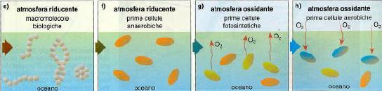
L'Esperimento di Miller-Urey (1953) 🧪
🧬 Origine della Vita & Evoluzione Chimica
- Simulazione: Scaldarono acqua per simulare l'oceano e la mischiarono a gas primitivi sotto continue scariche elettriche.
- Risultati: In una settimana, il 15% del carbonio inorganico fu convertito in composti organici solubili.
- Amminoacidi: Furono prodotti amminoacidi essenziali come glicina, alanina, acido aspartico e glutammico.
Evoluzione Chimica & Mondo a RNA (Ribozimi) 🧬
🧬 Origine della Vita & Evoluzione Chimica
- Biopolimeri e Coacervati: I monomeri organici condensarono in polimeri e si auto-aggregarono in coacervati o protobionti rudimentali.
- Mondo a RNA: Le prime molecole genetiche furono filamenti di RNA.
- Ribozimi: Molecole di RNA in grado di auto-replicarsi e fungere da catalizzatori biologici.
- Evoluzione del DNA: Il DNA sostituì poi l'RNA per la sua maggiore stabilità chimica.
Comparsa della Fotosintesi & Catastrofe dell'Ossigeno 🍃
🧬 Origine della Vita & Evoluzione Chimica
- Primi organismi: Procarioti eterotrofi anaerobi (3.5 miliardi di anni fa).
- Fotosintesi anossigenica: Esauriti i nutrienti, apparvero i primi fotosintetizzatori che usavano H₂S.
- Fotolisi e Ossigeno: I cianobatteri iniziarono a scindere H₂O, rilasciando O₂ atmosferico.
- Catastrofe dell'Ossigeno: Causò l'estinzione degli anaerobi obbligati, formò l'ozonosfera (O₃) e spianò la via agli organismi aerobi.
I Tre Domini della Vita (Bacteria, Archaea, Eucarya) 🧬
🦠 Procarioti, Cianobatteri & Classificazione dei Viventi
- La distinzione sistematica e morfo-funzionale dei viventi si basa sulle distanze filogenetiche e sulle modalità di nutrizione cellulare:
- Bacteria (Eubatteri): Procarioti classici unicellulari. Parete cellulare contenente peptidoglicano (mureina) , geni privi di introni, e membrane cellulari costituite da fosfolipidi con legami estere tra acidi grassi lineari e glicerolo.
- Archaea (Archeobatteri): Procarioti arcaici filogeneticamente più vicini agli Eucarioti. Privi di peptidoglicano nella parete (spesso costituita da pseudomureina o proteine S-layer). Le membrane cellulari contengono catene idrocarburiche eteree ramificate (fitanile) legate al glicerolo (legami etere resistenti all'idrolisi acida e termica), talvolta formanti un monostrato lipidico rigido. Vivono spesso in ambienti estremi: termofili (sorgenti calde), alofili (salinità estrema) e metanogeni (anaerobi produttori di CH₄).
- Eucarya (Eucarioti): Cellule caratterizzate da vera compartimentazione interna con nucleo e organelli delimitati da endomembrane.
Struttura dei Cianobatteri & Differenziamento Cellulare 🌾
🦠 Procarioti, Cianobatteri & Classificazione dei Viventi
- Cellule Vegetative: Cellule verdi normali deputate alla fotosintesi attiva.
- Acineti: Cellule giganti ricche di riserve (amido dei cianobatteri), con pareti ispessite, prodotte in condizioni avverse come spore di resistenza quiescenti.
- Eterocisti: Cellule a parete spessa impermeabile all'ossigeno. Poiché l'enzima nitrogenasi (responsabile della fissazione dell'azoto gassoso N₂) viene irreversibilmente inattivato dall'O₂ prodotto dalla fotosintesi, le eterocisti spengono il fotosistema II (non producono O₂) e si specializzano nell' azotofissazione , scambiando composti azotati (amminoacidi) con le cellule vegetative in cambio di carboidrati.
La Classificazione in Regni Eucarioti & I Protisti 👑
🦠 Procarioti, Cianobatteri & Classificazione dei Viventi
- Regno Protisti: Gruppo parafiletico artificiale che include tutti gli eucarioti unicellulari o pluricellulari semplici che non si sviluppano da un embrione e non hanno veri tessuti. Si dividono in: Protozoi (eterotrofi simili ad animali), Alghe unicellulari o pluricellulari (fotoautotrofi dotati di plastidi, progenitori delle piante terrestri, es. alghe verdi caroficee come il genere Chara ), e Funghi mucillaginosi (mixomiceti eterotrofi per assorbimento).
- Regno Funghi: Organismi eterotrofi per assorbimento extracellulare (secernono enzimi idrolitici nell'ambiente e assorbono i monomeri digeriti). Parete cellulare composta da chitina (polimero di N-acetilglucosammina).
- Regno Animali: Pluricellulari eterotrofi per ingestione interna. Privi di parete cellulare, a crescita definita.
- Regno Piante: Pluricellulari fotoautotrofi fotosintetici che si sviluppano a partire da un embrione protetto da tessuti materni sporofitici.
Struttura del Plasmalemma & Mosaico Fluido 🧼
🔌 Membrana Cellulare & Sistemi di Trasporto
- La membrana plasmatica (plasmalemma) è una barriera selettivamente permeabile essenziale per il mantenimento dell'omeostasi cellulare e la percezione dei segnali:
- Temperatura: Temperature basse inducono transizione a stato gelificato rigido.
- Acidi grassi insaturi: La presenza di doppi legami cis piega le code idrocarburiche impedendo il compattamento e aumentando la fluidità a basse temperature.
- Lunghezza delle catene: Catene corte riducono le interazioni di Van der Waals aumentando la fluidità.
- Steroli: I fitosteroli (es. sitosterolo, stigmasterolo nei vegetali) fungono da tamponi termici stabilizzando la fluidità.
Proteine di Membrana, Glicoproteine & Acquaporine ⛓️
🔌 Membrana Cellulare & Sistemi di Trasporto
- Proteine Intrinseche (Transmembrana): Attraversano completamente il doppio strato, possedendo domini ad alfa-elica idrofobi interni e domini idrofili sporgenti nei compartimenti acquosi.
- Proteine Estrinseche: Idrofile, legate debolmente alle teste polari dei lipidi o a proteine intrinseche tramite legami elettrostatici.
- Glicocalice: Catene oligosaccaridiche legate covalentemente a proteine (glicoproteine) o lipidi (glicolipidi), localizzate esclusivamente sulla faccia extracellulare , deputate al riconoscimento cellulare e alla ricezione di segnali chimici.
- Acquaporine: Canali proteici transmembrana altamente selettivi che consentono il flusso ultra-rapido di acqua per osmosi (senza consumo energetico) escludendo gli ioni idrogeno (protoni) per prevenire la scarica del potenziale elettrico di membrana.
Trasporto Passivo: Diffusione e Canali 💧
🔌 Membrana Cellulare & Sistemi di Trasporto
- Diffusione Semplice: Transito diretto attraverso il doppio strato fosfolipidico. Esclusivo per piccole molecole non polari e gas (O₂, CO₂, N₂) o piccole molecole polari neutre (H₂O, etanolo in minima parte). Le membrane sono impermeabili a ioni carichi e grandi molecole idrofile.
- Diffusione Facilitata: Richiede l'intervento di proteine transmembrana specifiche: Canali Proteici: Pori idrofili altamente selettivi regolati elettricamente (voltaggio-dipendenti) o chimicamente (ligando-dipendenti), che consentono il transito ultra-rapido di ioni specifici (es. canali per il K⁺, Cl⁻).
- Proteine Carrier (Trasportatori): Si legano specificamente al soluto subendo un cambiamento conformazionale che lo rilascia sull'altro lato della membrana (es. trasportatori del glucosio). Il trasporto è specifico, saturabile e soggetto a inibizione.
Trasporto Attivo Primario, Secondario & Vescicolare 🔋
🔌 Membrana Cellulare & Sistemi di Trasporto
- Trasporto Attivo Primario: Consuma direttamente ATP (idrolisi dell'ATP in ADP + Pi) per pompare ioni. Nelle piante l'enzima chiave è la H⁺-ATPasi di membrana (pompa protonica) , che estrude protoni nel compartimento extracellulare (parete) creando un forte gradiente di pH e un potenziale elettrico negativo all'interno della cellula (forza proton-motrice). Negli animali, l'esempio classico è la pompa Na⁺/K⁺-ATPasi (antiporto che estrude 3 Na⁺ ed immette 2 K⁺).
- Trasporto Attivo Secondario (Cotransporto): Non consuma ATP direttamente. Sfrutta il gradiente elettrochimico precostituito da una pompa primaria (es. la forza proton-motrice del gradiente di H⁺) per guidare il trasporto di un secondo soluto contro il suo gradiente: Symporto: Entrambi i soluti si muovono nella stessa direzione (es. symporto Saccarosio/H⁺ che carica gli zuccheri nel floema).
- Antiporto: I due soluti si muovono in direzioni opposte (es. antiporto Na⁺/H⁺ per la detossificazione salina).
- Trasporto Vescicolare: Per macromolecole e particelle. Richiede deformazione della membrana e consumo di ATP: Endocitosi: Invaginazione del plasmalemma per formare vescicole interne. Divisa in pinocitosi (liquidi) e fagocitosi (solidi grandi).
- Esocitosi: Fusione di vescicole intracellulari (es. secrete dal Golgi contenenti emicellulose per la parete) con il plasmalemma, rilasciando il contenuto all'esterno e integrando nuovi lipidi in membrana.
Reticolo Endoplasmatico Liscio e Rugoso (SER/RER) 🕸️
🔋 Organelli Citoplasmatici & Sistema Endomembrane
- La compartimentazione cellulare garantisce l'efficienza metabolica isolando reazioni chimiche incompatibili in organelli specializzati:
- RER (Reticolo Endoplasmatico Rugoso): Caratterizzato da ribosomi ancorati alla superficie esterna tramite proteine recettoriali (riboforine). Le catene polipeptidiche sintetizzate dai ribosomi vengono co-traduzionalmente traslocate nel lume del RER, dove subiscono ripiegamento tridimensionale, formazione di ponti disolfuro e prima N-glicosilazione. Produce proteine destinate alla membrana plasmatica, ai vacuoli, ai lisosomi o alla secrezione extracellulare.
- SER (Reticolo Endoplasmatico Liscio): Privo di ribosomi associati, a struttura prevalentemente tubulare. Sede della sintesi dei lipidi di membrana (fosfolipidi, galattolipidi), sintesi di ormoni steroidei, accumulo di ioni Calcio (Ca²⁺) e detossificazione da sostanze xenobiotiche nocive.
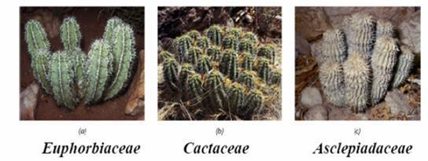
I Ribosomi & La Sintesi Proteica (Poliribosomi) 🧬
🔋 Organelli Citoplasmatici & Sistema Endomembrane
- Complessi ribonucleoproteici (privi di membrana) costituiti da RNA ribosomiale (rRNA) e proteine, suddivisi in due subunità asimmetriche (negli Eucarioti: 60S e 40S, formanti il ribosoma 80S; nei Procarioti e negli organelli semiautonomi: 50S e 30S, formanti il ribosoma 70S). Sintesi Proteica: L'mRNA esce dal nucleo e si lega alla subunità minore del ribosoma. Le molecole di tRNA carichi con gli amminoacidi specifici decodificano la sequenza di triplette (codoni) dell'mRNA mediante l'appaiamento del loro anticodone. La subunità maggiore catalizza la formazione del legame peptidico (attività peptidil-transferasica dell'rRNA) allungando la catena proteica. Poliribosomi (Polisomi): Strutture a catena costituite da più ribosomi che traducono simultaneamente, uno dopo l'altro, la medesima molecola di mRNA, massimizzando la resa di sintesi proteica. Ribosomi Liberi: Sintetizzano proteine destinate a rimanere nel citosol, nel nucleo, nei mitocondri o nei perossisomi.
Apparato di Golgi (Dittiosomi) & Flusso Vescicolare 📦
🔋 Organelli Citoplasmatici & Sistema Endomembrane
- Faccia CIS (di ingresso o formazione): Orientata verso il RER. Riceve vescicole di trasporto contenenti proteine e lipidi neosintetizzati dal RER.
- Cisterne Mediane: Sede di rimodellamento delle catene oligosaccaridiche (glicosilazione terminale, rimozione di mannosio e aggiunta di altri zuccheri).
- Faccia TRANS (di uscita o maturazione - TGN): Sede di smistamento finale. Le molecole mature vengono confezionate in vescicole secretorie clatrina-rivestite destinate al plasmalemma (esocitosi) o ai vacuoli/lisosomi.
- pectine ed emicellulose: Funzione Vegetale Chiave: Il Golgi è la sede principale di sintesi ed esportazione dei polisaccaridi non cellulosici della matrice della parete cellulare (), secreti in enormi quantità durante la divisione e distensione cellulare.
Mitocondri, Doppia Membrana & Respirazione Cellulare ⚡
🔋 Organelli Citoplasmatici & Sistema Endomembrane
- Membrana Esterna: Liscia, ricca di proteine canale chiamate porine che la rendono liberamente permeabile a ioni e piccole molecole.
- Membrana Interna: Altamente selettiva, priva di porine e ricca di un fosfolipide insolito (cardiolipina) che la rende impermeabile agli ioni. È ripiegata in creste mitocondriali per aumentare la superficie funzionale, sulle quali sono ancorati i complessi della catena di trasporto degli elettroni e i complessi esamerici dell' ATP-sintasi .
- Matrice Mitocondriale: Compartimento interno idrofilo ricco di enzimi solubili. Contiene i macchinari per il Ciclo di Krebs (acido citrico) e la beta-ossidazione degli acidi grassi, oltre a DNA circolare nudo proprio (condrioma) , ribosomi 70S di tipo batterico e tRNA, che consentono una sintesi proteica autonoma matrilineare.
Microcorpi: Perossisomi e Gliossisomi 🧪
🔋 Organelli Citoplasmatici & Sistema Endomembrane
- Perossisomi: Utilizzano l'ossigeno molecolare per ossidare molecole organiche, producendo perossido di idrogeno (H₂O₂), una sostanza altamente tossica per la cellula. L'enzima catalasi , abbondante nei perossisomi, scinde immediatamente l'H₂O₂ in acqua ed ossigeno (2 H₂O₂ -> 2 H₂O + O₂), neutralizzando la tossicità. Nelle foglie delle piante C3 cooperano attivamente con cloroplasti e mitocondri per compiere la fotorespirazione .
- Gliossisomi: Perossisomi specializzati presenti esclusivamente nei semi oleosi in germinazione. Contengono gli enzimi del ciclo del gliossilato (via metabolica shunt del ciclo di Krebs), che consente la conversione diretta dei lipidi di riserva (trigliceridi stoccati negli oleosomi) in saccarosio (glucogenesi), essenziale per nutrire l'embrione prima della comparsa della fotosintesi.
Il Citoscheletro: Microtubuli, Actina & Motori Molecolari 🕸️
🕸️ Citoscheletro, Nucleo & Organizzazione Genomica
- La stabilità meccanica della cellula eucariote, i suoi movimenti interni e la protezione del prezioso genoma nucleare dipendono da sistemi proteici altamente organizzati:
- Microtubuli: Tubuli cavi cilindrici (diametro 25 nm) formati da 13 protofilamenti paralleli di eterodimeri di alfa e beta-tubulina . Sono strutture polarizzate (estremità "+" a rapida crescita, estremità "-" ancorata al centro organizzatore MTOC). Nelle piante controllano la deposizione delle rosette CesA in parete, formano la banda premitotica e il fragmoplasto per la citochinesi, e costituiscono il fuso mitotico. Fungono da binari per motori molecolari: chinesine (muovono verso estremità "+") e dyneine (muovono verso estremità "-").
- Microfilamenti (Actina): Filamenti elicoidali flessibili a doppio filamento (diametro 7 nm) costituiti da subunità di G-actina polimerizzate in F-actina. Sono polarizzati e dinamici. Cooperando con il motore molecolare miosina , generano la ciclosi (flusso citoplasmatico) , guidano l'accrescimento apicale polarizzato del tubetto pollinico, e mediano la contrazione muscolare negli animali.
- Filamenti Intermedi: Cordoni fibrosi stabili e resistenti (diametro 10 nm) costituiti da polimeri di proteine cheratiniche o laminari. Forniscono stabilità meccanica e costituiscono la lamina nucleare sotto l'involucro nucleare.
Il Nucleo Cellulare: Involucro Nucleare & Pori 🧬
🕸️ Citoscheletro, Nucleo & Organizzazione Genomica
- Involucro Nucleare: Doppia membrana concentrica interrotta da fessure. La membrana interna è associata alla lamina nucleare (sostegno meccanico e ancoraggio cromatina); la membrana esterna è ricca di ribosomi ed è in continuità strutturale con il lume del RER.
- Complesso del Poro Nucleare (NPC): Canali macromolecolari simmetrici a forma di anello ottagonale costituiti da oltre 30 proteine diverse (nucleoporine). Regolano in modo estremamente selettivo il traffico bidirezionale nucleo-citoplasma. Le molecole piccole passano per diffusione; le grandi macromolecole (proteine come istoni e polimerasi dirette nel nucleo; RNA e subunità ribosomiali dirette nel citoplasma) richiedono recettori proteici di trasporto ( importine ed esportine ) e l'idrolisi di GTP mediata dalla piccola GTPasi Ran.
Cromatina, Nucleosoma e Istoni ⛓️
🕸️ Citoscheletro, Nucleo & Organizzazione Genomica
- Istoni: Proteine basiche ricchissime di amminoacidi carichi positivamente (lisina ed arginina), che si legano saldamente ai gruppi fosfato del DNA carichi negativamente. Esistono 5 tipi principali: H1, H2A, H2B, H3, H4.
- Il Nucleosoma: L'unità strutturale fondamentale della cromatina. Costituito da un ottamero istonico core (due copie ciascuna di H2A, H2B, H3 e H4) attorno al quale si avvolge il filamento di DNA a doppia elica compiendo circa 1.65 giri (147 coppie di basi). I nucleosomi sono separati da un tratto di DNA linker associato all'istone di giunzione H1 , che media il ripiegamento in fibre cromatiniche superiori da 30 nm (solenoide).
- Eucromatina & Eterocromatina: Eucromatina: Cromatina decondensata, accessibile agli enzimi di trascrizione (geni attivi). Gli istoni presentano alti livelli di acetilazione che allentano le interazioni elettrostatiche con il DNA.
- Eterocromatina: Cromatina fortemente condensata e inattiva trascrizionalmente. Divisa in costitutiva (centromeri e telomeri, permanentemente silente) e facoltativa (contiene geni silenziati in modo reversibile durante il differenziamento). Gli istoni presentano alti livelli di metilazione.
Il Nucleolo: Fabbrica di Ribosomi 🏭
🕸️ Citoscheletro, Nucleo & Organizzazione Genomica
- Trascrizione dei precursori degli rRNA da parte della RNA Polimerasi I.
- Maturazione enzimatica e taglio dei pre-rRNA in frammenti maturi 18S, 5.8S e 28S.
- Assemblaggio di questi rRNA maturi con le proteine ribosomiali importate dal citoplasma, formando le subunità ribosomiali minori e maggiori immature, le quali verranno separatamente esportate nel citoplasma attraverso i pori nucleari per formare i ribosomi funzionali.
Fasi del Ciclo Cellulare & Checkpoints di Controllo 🔄
🔄 Ciclo Cellulare, Mitosi & Meiosi
- La trasmissione fedele dell'informazione genetica e la generazione di variabilità biologica avvengono tramite divisioni cellulari finemente regolate:
- Interfase: Fase G₁ (Gap 1): Intensa attività metabolica, crescita volumetrica cellulare, sintesi di proteine ed organelli. Le cellule che smettono di dividersi entrano in una fase di quiescenza permanente o temporanea detta G₀ .
- duplicazione semiconservativa del DNA nucleare: Fase S (Sintesi): Avviene la . Ogni cromosoma interfasico a singolo cromatidio viene duplicato producendo due cromatidi fratelli identici uniti a livello del centromero. Duplicazione dei centrosomi (nelle cellule animali).
- Fase G₂ (Gap 2): Sintesi di proteine specifiche per la divisione (es. tubulina), condensazione iniziale della cromatina e controllo finale dell'integrità del DNA duplicato.
- Fase M (Mitosi e Citochinesi): Divisione nucleare e successiva spartizione del citoplasma.
- Checkpoints (Punti di Controllo): Sistemi biochimici basati su complessi chinasi-ciclina ( Cdk-Ciclina ) che arrestano il ciclo in caso di danni al DNA o fuso imperfetto: checkpoint G₁/S (punto di restrizione), checkpoint G₂/M (controllo replicazione DNA) e checkpoint di metafase (controllo attacco cromosomi al fuso).
Mitosi & Citochinesi Vegetale (Il Fragmoplasto) ⚡
🔄 Ciclo Cellulare, Mitosi & Meiosi
- Profase: La cromatina si condensa in cromosomi visibili. Scompare il nucleolo e si dissolve l'involucro nucleare. Si organizza il fuso mitotico. Nelle cellule vegetali (prive di centrosomi e centrioli), i microtubuli si auto-organizzano attorno al nucleo guidati dalla banda premitotica corticale , che predetermina l'esatto orientamento spaziale del futuro piano di divisione.
- Metafase: I microtubuli del fuso si legano ai complessi proteici del cinetocore su ciascun centromero. I cromosomi vengono allineati perfettamente lungo il piano equatoriale della cellula (piastra metafasica).
- Anafase: La degradazione enzimatica della coesina separa di colpo i centromeri. I cromatidi fratelli (ora cromosomi singoli) vengono trascinati verso i poli opposti della cellula dall'accorciamento dei microtubuli cinetocorici.
- Telofase: I cromosomi raggiungono i poli e si decondensano in cromatina. Si ricostituisce l'involucro nucleare attorno ai due nuovi nuclei e ricompare il nucleolo.
- Citochinesi Vegetale (Fragmoplasto): A differenza delle cellule animali che si dividono per strozzatura elastica actinica esterna, le cellule vegetali possiedono pareti rigide. A fine anafase si organizza nella zona equatoriale il fragmoplasto (un cilindro di microtubuli paralleli). Questo guida la migrazione e la fusione centripeta di vescicole secrete dall'apparato di Golgi cariche di pectine. La fusione delle vescicole forma la piastra cellulare mediana, che cresce dal centro verso la periferia saldandosi con la parete cellulare madre, originando la lamella mediana su cui le cellule figlie depositeranno la parete primaria. Le connessioni citoplasmatiche rimaste intrappolate formano i plasmodesmi .
Meiosi: Divisione Riduzionale, Crossing-Over & Variabilità 🧬
🔄 Ciclo Cellulare, Mitosi & Meiosi
- Meiosi I (Riduzionale): Profase I: Lunghissima e complessa. Divisa in: leptotene, zigotene (appaiamento o sinapsi dei cromosomi omologhi tramite il complesso sinaptonemale formando le tetradi/bivalenti), pachitene (avviene il crossing-over , ovvero lo scambio fisico di segmenti di DNA tra cromatidi non fratelli di cromosomi omologhi, principale sorgente di ricombinazione genetica), diplotene (i cromosomi omologhi si allontanano rimanendo uniti solo nei punti di incrocio chiamati chiasmi ), diacinesi.
- Metafase I: Le tetradi si allineano sulla piastra equatoriale. L'orientamento di ciascun bivalente è casuale (assortimento indipendente).
- Anafase I: I microtubuli separano i cromosomi omologhi trascinandoli ai poli opposti (i cromatidi fratelli rimangono uniti al centromero!). Dimezza il corredo cromosomico.
- Telofase I: Si formano due nuclei aploidi (n).
- Meiosi II (Equazionale): Simile ad una normale mitosi. Separa i cromatidi fratelli delle due cellule aploidi, producendo alla fine 4 cellule figlie aploidi (n).
Carboidrati: Monomeri, Amido di Riserva & Cellulosa di Parete 🥖
🧪 Le Macromolecole Biologiche
- I costituenti molecolari della materia vivente si dividono in quattro grandi classi polimeriche strutturali e funzionali, affiancate da metaboliti secondari:
- Monosaccaridi: Zuccheri semplici. Pentosi (ribosio, desossiribosio negli acidi nucleici) ed esosi (glucosio, fruttosio, galattosio).
- Disaccaridi: Unione di due monosaccaridi con legame glicosidico (es. saccarosio = glucosio + fruttosio, la forma principale di trasporto degli zuccheri nel floema vegetale; maltosio = glucosio + glucosio).
- Polisaccaridi di Riserva: Polimeri del D-glucosio insolubili: Amido: Riserva delle piante. Miscela di amilosio (catene lineari avvolte ad elica unite da legami glucosidici alfa-1,4) ed amilopectina (catene fortemente ramificate con ramificazioni laterali unite da legami alfa-1,6). Stoccato nei cloroplasti (amido primario temporaneo) e negli amiloplasti (amido secondario).
- Glicogeno: Riserva degli animali e dei funghi, a struttura simile all'amilopectina ma ancor più ramificata.
- Polisaccaridi Strutturali: Cellulosa: Il costituente fondamentale della parete cellulare vegetale. Polimero lineare rigido costituito da molecole di glucosio unite esclusivamente da legami beta-1,4 glicosidici . Questa conformazione permette alle catene lineari adiacenti di allinearsi parallelamente formando fittissimi legami idrogeno intercatena, auto-assemblandosi in microfibrille di cellulosa insolubili ad altissima resistenza alla trazione (simile all'acciaio).
Lipidi: Trigliceridi, Fosfolipidi Anfipatici & Metaboliti Secondari 🥥
🧪 Le Macromolecole Biologiche
- Trigliceridi (Grassi neutri): Esteri del glicerolo con 3 acidi grassi. Fungono da riserva energetica concentrata. Se gli acidi grassi sono saturi (privi di doppi legami, catene lineari) sono solidi a temperatura ambiente (grassi animali); se sono insaturi (con doppi legami cis, catene piegate) sono liquidi (oli vegetali, accumulati in goccioline citoplasmatiche chiamate oleosomi nei semi di colza, girasole, oliva).
- Fosfolipidi: Lipidi strutturali anfipatici. Costituiti da glicerolo legato a due acidi grassi (code apolari idrofobe) e a un gruppo fosfato legato a sua volta a un gruppo polare carico come la colina (testa polare idrofila). Auto-assemblano in doppi strati a contatto con l'acqua.
- Metaboliti Secondari Vegetali: Molecole lipidiche o idrofobe non coinvolte nel metabolismo primario ma essenziali per la difesa e riproduzione: Terpeni: Polimeri dell'isoprene (oli essenziali aromatici repellenti, resina sigillante delle conifere, fitol della clorofilla, carotenoidi).
- Composti Fenolici: Contengono anelli aromatici (lignina di sostegno, tannini astringenti anti-erbivori, flavonoidi colorati vessillari).
- Alcaloidi: Composti azotati basici derivati da amminoacidi, ad altissima attività farmacologica e tossica sul sistema nervoso animale (coniina della cicuta, morfina del papavero, caffeina, nicotina).
Proteine: Legame Peptidico, Livelli Strutturali ed Enzimi 🥩
🧪 Le Macromolecole Biologiche
- Struttura Primaria: La sequenza lineare degli amminoacidi lungo la catena polipeptidica, codificata geneticamente dal DNA.
- alfa-elica: Struttura Secondaria: Ripiegamento regolare locale stabilizzato da legami idrogeno tra i gruppi N-H e C=O dello scheletro peptidico (es. spiralizzata e foglietto beta ripiegato).
- Struttura Terziaria: Configurazione tridimensionale globale globulare stabilizzata da interazioni tra le catene laterali (gruppi R) degli amminoacidi: ponti disolfuro covalenti S-S tra cisteine, legami ionici, attrazioni idrofobe interne e legami idrogeno. Determina la funzione biologica e la specificità della proteina.
- Struttura Quaternaria: Associazione non covalente di più catene polipeptidiche distinte (subunità) a formare un complesso proteico funzionale multimerico (es. emoglobina, rosette CesA).
- Enzimi: Catalizzatori biologici di natura proteica ad altissima specificità. Abbassano l'energia di attivazione delle reazioni chimiche legando i reagenti nel loro sito attivo conformazionale. Soggetti a regolazione allosterica, inibizione competitiva o non competitiva, e denaturazione (perdita irreversibile di struttura terziaria) ad alte temperature o pH estremi.
Acidi Nucleici: Struttura dei Nucleotidi, DNA ed RNA 🧬
🧪 Le Macromolecole Biologiche
- Basi Azotate: Purine (doppio anello): Adenina (A) e Guanina (G).
- Pirimidine (singolo anello): Citosina (C), Timina (T, esclusiva del DNA) ed Uracile (U, esclusivo dell'RNA).
- DNA (Acido Desossiribonucleico): Lo zucchero è il 2-desossiribosio. Costituito da due filamenti antiparalleli avvolti a doppia elica destrorsa . I filamenti sono tenuti uniti da legami idrogeno tra le basi azotate complementari rivolte all'interno: A si appaia sempre con T (2 legami idrogeno) e G si appaia sempre con C (3 legami idrogeno, coppia più stabile) . Lo scheletro esterno è formato da legami covalenti fosfodiesterici 5'-3' tra zuccheri e fosfati. Custodisce stabilmente l'informazione genetica. Compie duplicazione semiconservativa.
- RNA (Acido Ribonucleico): Lo zucchero è il D-ribosio. È a singolo filamento, chimicamente meno stabile del DNA. Contiene la base azotata Uracile (U) al posto della Timina (T). Coinvolto attivamente nella trascrizione ed espressione genica: mRNA (messaggero): Copia a singolo filamento di un gene del DNA, trasporta le istruzioni per la sintesi proteica al ribosoma.
- tRNA (transfer): Molecola a forma di trifoglio che trasporta fisicamente gli amminoacidi specifici al ribosoma appaiando il suo anticodone al codone dell'mRNA.
- rRNA (ribosomiale): Costituente strutturale e catalitico dei ribosomi.
Plastidi e Teoria Endosimbiontica (Lynn Margulis) 🍃
🧪 La Cellula Vegetale & Compartimentazione
- La cellula vegetale si differenzia da quella eucariotica animale per la presenza di tre elementi strutturali fondamentali indispensabili all'autotrofia, al turgore e alla stabilità meccanica:
- Cloroplasti: Sede della fotosintesi (fase luminosa nei tilacoidi, fase oscura o ciclo di Calvin nello stroma). Possiedono DNA circolare nudo proprio (plastioma), ribosomi 70S di tipo batterico e doppia membrana (l'esterna fosfolipidica di origine eucariotica con porine, l'interna cianobatterica altamente selettiva). 📸 Fig. da Dispensa pag. 2 - Origine evolutiva della doppia membrana plastidiale
- Cromoplasti: Privi di tilacoidi strutturati, contengono elevatissime concentrazioni di pigmenti carotenoidi lipofili (carotene e xantofille) che impartiscono colorazioni gialle, arancioni e rosse a petali e frutti maturi. Derivano generalmente dai cloroplasti senescenti per degradazione della clorofilla e della struttura tilacoidale (fase di maturazione). 📸 Fig. da Dispensa pag. 24 - Cromoplasti: plastidi specializzati nell'accumulo di carotenoidi
- Leucoplasti: Plastidi privi di pigmento e di membrana interna complessa, specializzati nell'accumulo di sostanze di riserva: Amiloplasti: accumulano amido secondario in strati concentrici attorno ad un punto di origine (ilo) in organi sotterranei (tuberi, radici) o fungono da sensori di gravità (statoliti). 📸 Fig. da Dispensa pag. 24 - Amiloplasti accumulanti grandi granuli di amido secondario
- Elaioplasti (oleoplasti): accumulano lipidi e oli vegetali. 📸 Fig. da Dispensa pag. 24 - Plastidi di accumulo: differenziazione degli elaioplasti
- Proteinoplasti: accumulano proteine cristalline o amorfe.
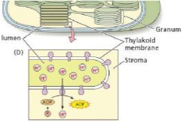
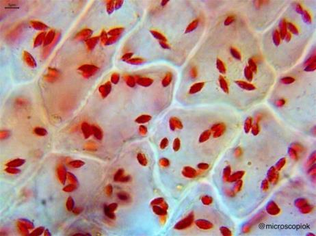
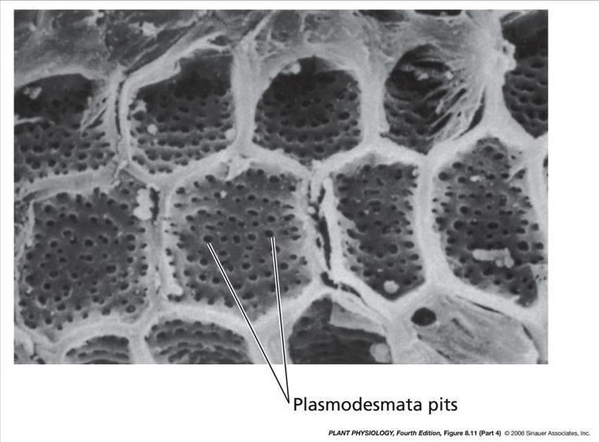
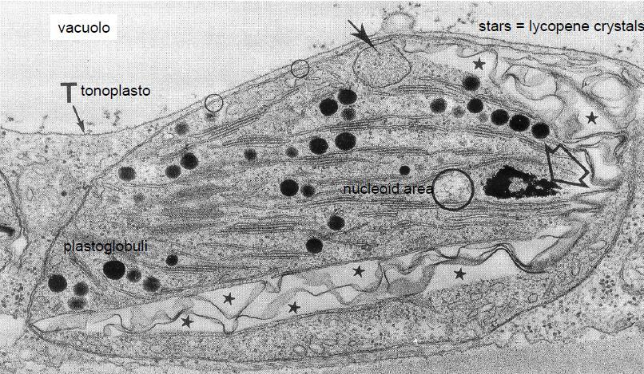
Vacuolo: Osmosi, Turgore & Metaboliti Secondari 💧
🧪 La Cellula Vegetale & Compartimentazione
- Mantenimento del turgore cellulare: L'accumulo di soluti (acidi organici, sali, zuccheri) genera un potenziale osmotico negativo che attira acqua per osmosi. La pressione esercitata contro la parete cellulare rigida mantiene la struttura eretta delle piante erbacee.
- Funzione digestiva idrolitica: Equivalente ai lisosomi delle cellule animali.
- Accumulo di metaboliti secondari: Pigmenti idrosolubili (antociani rossi, blu e viola in base al pH vacuolare; flavonoidi gialli), alcaloidi tossici di difesa (nicotina, caffeina, morfina), tannini astringenti, cristalli minerali insolubili (ossalato di calcio in aghi o druse) con funzioni di deterrenza contro gli erbivori.
Lamella Mediana & Matrice Pectinica 🧪
🧱 Parete Cellulare: Macromolecole, Strati & Modificazioni
- La parete cellulare è un compartimento extracellulare dinamico secreto centripetamente (dall'esterno verso l'interno). Si suddivide in tre livelli fisici:
- Lo strato più esterno, comune a due cellule adiacenti. Costituito prevalentemente da pectine (polisaccaridi cementanti ricchi di acido galatturonico, come omogalatturonani e ramnogalatturonani) ad azione idrofila gelificante. Viene solubilizzata enzimaticamente dalle pectinasi durante la maturazione dei frutti (ammorbidimento) e la formazione delle zone di abscissione fogliare.
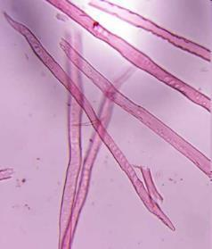
Parete Primaria 🌱
🧱 Parete Cellulare: Macromolecole, Strati & Modificazioni
- Sottile, elastica ed estensibile, presente in tutte le cellule vegetali giovani o metabolicamente attive. Composta da cellulosa al 20-30% disposta in modo disordinato (tessitura dispersa o isotropa) immersa in una matrice altamente idratata di emicellulose (xiloglicani) e pectine. Consente l'accrescimento per distensione cellulare sotto la pressione di turgore indotta dal vacuolo.
Parete Secondaria & Sintesi della Cellulosa 🪵
🧱 Parete Cellulare: Macromolecole, Strati & Modificazioni
- Si deposita centripetamente solo dopo che la cellula ha terminato l'accrescimento volumetrico. Molto ricca di cellulosa (polimero lineare di residui di D-glucosio legati con legame beta-1,4) organizzata in microfibrille parallele ad altissima resistenza meccanica disposte in tre sottostrati orientati diversamente (S1, S2, S3). La cellulosa viene sintetizzata a livello della membrana plasmatica da complessi enzimatici esametrici detti rosette di celluloso-sintasi (CesA) , le quali si muovono lungo i binari formati dai microtubuli corticali sottostanti, tessendo le fibrille direttamente in muro. 📸 Fig. da Dispensa pag. 64 - Rosette di celluloso-sintasi (CesA) in membrana
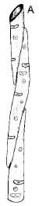
Modificazioni Chimiche della Parete 🧪
🧱 Parete Cellulare: Macromolecole, Strati & Modificazioni
- Lignificazione: Impregnazione della parete primaria e secondaria con lignina (polimero idrofobo tridimensionale di monolignoli: alcool p-coumarilico, coniferilico e sinapilico). Conferisce rigidità assoluta alla compressione ed evita il collasso dei vasi xilematici sottoposti a forti tensioni idriche. 📸 Fig. da Dispensa pag. 64 - Particolare di parete secondaria pesantemente lignificata
- Suberificazione: Deposizione interna di lamelle di suberina (macromolecola composta da un dominio polifenolico simile alla lignina e un dominio polialifatico impermeabilizzante). Tipica del sughero e dell'endoderma radicale. 📸 Fig. da Dispensa pag. 64 - Modificazioni paretali: deposizione di cutina e suberina
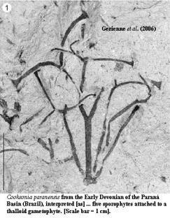
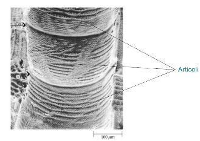
Piani di Divisione Cellulare: Anticline vs Pericline ⚡
🌱 Tessuti Meristematici (Accrescimento Indefinito & Divisioni)
- I meristemi mantengono la pianta in uno stato di crescita permanente e rigenerativa. Si differenziano per origine evolutiva e piani di divisione cellulare:
- Divisioni Anticline: La piastra cellulare si forma perpendicolarmente alla superficie dell'organo. Aumenta il numero di cellule all'interno dello stesso strato, determinando l'espansione in superficie dell'organo (es. crescita della tunica). 📸 Fig. da Dispensa pag. 74 - Direzione dei piani di divisione cellulare nei tessuti apicali
- Divisioni Pericline: La piastra cellulare si forma parallelamente alla superficie dell'organo. Aumenta il numero di strati cellulari sovrapposti, determinando l'espansione in spessore o diametro (tipico dei cambi meristematici secondari).
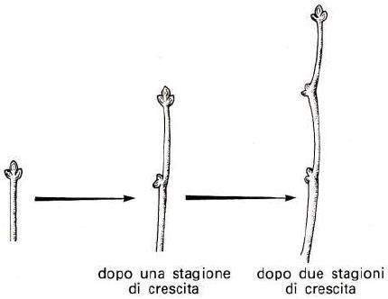
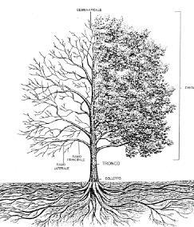
Meristemi Primari (SAM, RAM & Teoria Tunica-Corpus) 📏
🌱 Tessuti Meristematici (Accrescimento Indefinito & Divisioni)
- Apice del Germoglio (SAM): Organizzato secondo la teoria Tunica-Corpus di Schmidt. La Tunica (strati L1 e L2 più esterni) esegue esclusivamente divisioni anticline per accrescere l'epidermide e il mesofillo esterno. 📸 Fig. da Dispensa pag. 74 - Organizzazione del meristema apicale del germoglio (SAM) 📸 Fig. da Dispensa pag. 74 - Sezione istologica longitudinale del germoglio apicale e primordi fogliari
- Apice della Radice (RAM): Organizzato con un centro quiescente (QC) circondato da cellule iniziali attive. Il QC è caratterizzato da divisioni estremamente lente, fungendo da riserva cellulare protetta da mutazioni genetiche. 📸 Fig. da Dispensa pag. 74 - Sezione longitudinale di apice radicale (RAM) e caliptra Le cellule iniziali producono costantemente cellule meristematiche destinate al corpo primario della radice e alla caliptra (cuffia protettiva).
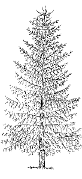
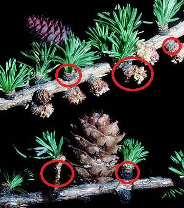
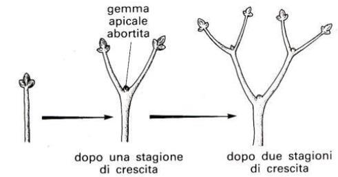
Meristemi Secondari (Cambio Vascolare & Fellogeno) 🪵
🌱 Tessuti Meristematici (Accrescimento Indefinito & Divisioni)
- Cambio Cribro-Legnoso (Vascolare): Tessuto dipleurico che produce legno (xilema secondario) centripetamente e libro (floema secondario) centrifugamente. 📸 Fig. da Dispensa pag. 74 - Attività dipleurica del cambio cribro-legnoso
- Cambio Sughero-Fellodermico (Fellogeno): Produce sughero centrifugamente e felloderma centripetamente, formando il periderma che sostituisce l'epidermide lacerata dalla crescita secondaria.
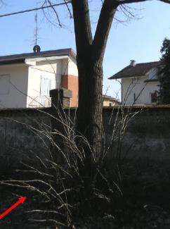
Epidermide Aerea: Stomi & Cellule Bulliformi 🍃
🛡️ Tessuti Tegumentali: Epidermide, Rizoderma & Endoderma
- I tessuti di rivestimento regolano in modo altamente selettivo gli scambi di acqua, gas e nutrienti con l'ambiente esterno ed interno:
- Tessuto primario continuo privo di spazi intercellulari e di cloroplasti (ad eccezione delle cellule di guardia stomatiche). Meccanismo di Apertura degli Stomi: La luce blu o bassi livelli di CO₂ attivano una H+-ATPasi sulla membrana delle cellule di guardia. Il pompaggio attivo di protoni fuori dalla cellula genera un forte potenziale elettrico negativo che apre canali voltaggio-dipendenti per l'ingresso di ioni potassio (K+) e cloruro (Cl-). L'accumulo osmotico di questi ioni richiama acqua per osmosi attraverso le acquaporine. L'aumento del turgore rigonfia le cellule di guardia le quali, avendo pareti interne ispessite e microfibrille di cellulosa orientate radialmente, si curvano allontanandosi e aprendo la rima stomatica. Le cellule bulliformi (tipiche delle Poaceae, localizzate a bande sulla pagina superiore) sono cellule giganti ricche d'acqua che, in condizioni di deficit idrico, perdono turgore rapidamente provocando il ripiegamento o accartocciamento della lamina fogliare, ordinando l'esposizione al sole e la traspirazione.
Rizoderma & Peli Radicali 🌾
🛡️ Tessuti Tegumentali: Epidermide, Rizoderma & Endoderma
- Tessuto primario esterno della radice nella zona assorbente. È privo di cuticola e stomi, ed è costituito da cellule con pareti estremamente sottili per agevolare il passaggio dell'acqua. Alcune cellule specializzate dette tricoblasti si estroflettono originando i peli radicali (peli unicellulari a vita breve), che aumentano la superficie assorbente radicale fino a 20 volte, penetrando negli anfratti del terreno per catturare l'acqua capillare.
Endoderma & Banda di Caspary 🛡️
🛡️ Tessuti Tegumentali: Epidermide, Rizoderma & Endoderma
- Monostrato cellulare continuo che delimita internamente la corteccia della radice isolando il cilindro centrale. Le pareti radiali e trasversali delle sue cellule presentano un'impregnazione ad anello di suberina e lignina chiamata Banda di Caspary . Questa struttura blocca la via di trasporto apoplastica (l'acqua e i sali minerali che scorrono liberamente negli spazi intercellulari e lungo le pareti), costringendo tutte le soluzioni ad attraversare la membrana plasmatica selettiva delle cellule endodermiche ed entrare nella via simplastica . In questo modo la pianta filtra attivamente gli ioni minerali ed evita il reflusso passivo di nutrienti verso l'esterno.
Sughero & Lenticelle 🪵
🛡️ Tessuti Tegumentali: Epidermide, Rizoderma & Endoderma
- Tessuto secondario esterno che riveste i fusti e le radici in struttura secondaria. Le cellule sono morte a maturità, prive di protoplasto e con pareti stratificate di suberina e cere che forniscono un isolamento eccezionale contro gli sbalzi termici, gli incendi, la disidratazione e gli attacchi parassitari. Gli scambi gassosi per la respirazione dei tessuti vivi profondi sono garantiti dalle lenticelle , porzioni di periderma in cui il fellogeno produce cellule parenchimatiche arrotondate e non suberificate (tessuto di riempimento) a mutuo contatto labile, che lasciano ampi spazi intercellulari permeabili ai gas.
Collenchima (Vivo) vs Sclerenchima (Morto) 💪
💪 Tessuti di Sostegno & Conduzione Linfa
- I sistemi strutturali per la colonizzazione della terraframe e il trasporto idraulico a grandi distanze:
- Collenchima: Costituito da cellule vive ad alto contenuto idrico, dotate di pareti primarie non lignificate, ispessite in modo disomogeneo (deposito asimmetrico di pectine ed emicellulose). Fornisce un sostegno plastico ed elastico ideale per organi giovani, piccioli ed erbe in attiva crescita. Si distingue in collenchima angolare (ispessimenti agli angoli cellulari), lamellare (sulle pareti tangenziali) e annulare (lume cellulare circolare).
- Sclerenchima: Costituito da cellule morte a maturità, prive di citoplasma, con pareti secondarie spesse e uniformemente lignificate. Fornisce un sostegno rigido a organi che hanno terminato l'accrescimento. Si suddivide in fibre sclerenchimatiche (allungate, flessibili, riunite in fasci longitudinali; es. canapa, lino) e sclereidi (cellule brevi e dure: brachisclereidi rotondeggianti nella polpa di pera, astrosclereidi ramificate in piante acquatiche, osteosclereidi a forma di osso nei tegumenti dei semi).
Xilema (Legno) vs Floema (Libro) 🔌
💪 Tessuti di Sostegno & Conduzione Linfa
- Xilema (Trasporto Ascendente, Linfa Grezza): Trasporta acqua e sali minerali dalle radici alle foglie. Costituito da cellule morte a maturità, cave e pesantemente lignificate (resistenti alla fortissima pressione negativa di aspirazione). Si suddivide in: Tracheidi (o vasi chiusi, tipici delle Gimnosperme): Cellule allungate e fusiformi, le cui pareti terminali non sono perforate ma presentano punteggiature areolate munite di un toro centrale elastico che funge da valvola di sicurezza contro l'embolia gassosa.
- Trachee (o vasi aperti, esclusivi delle Angiosperme): Cellule cilindriche corte allineate longitudinalmente a formare veri e propri tubi continui (vasi xilematici). Le pareti divisorie trasversali sono **completamente perforate** (perforazione semplice o scalariforme), consentendo un flusso idraulico ultra-rapido a bassissimo attrito.
- Floema (Trasporto Discendente, Linfa Elaborata): Trasporta gli assimilati fotosintetici (principalmente saccarosio) dalle foglie sorgenti ("source") agli organi utilizzatori ("sink"). Costituito da cellule vive ma altamente degenerate (prive di nucleo, vacuolo, ribosomi ed apparato di Golgi a maturità per lasciare il lume cellulare libero): Cellule Cribrose (Gimnosperme): Associate alle cellule albuminose.
- aree cribrose: Tubetti Cribrosi (Angiosperme): Elementi sovrapposti le cui pareti trasversali, dette , presentano pori giganti rivestiti internamente da callosio. Ciascun elemento del tubetto cribroso è strettamente associato ad una cellula compagna viva e nucleata, che ne dirige il metabolismo energetico e sintetizza le proteine necessarie caricando attivamente il saccarosio nel tubetto.
Secrezione Intracellulare vs Extracellulare 🧪
🧪 Tessuti Secretori & Metaboliti di Difesa
- I tessuti secretori producono, accumulano o espellono sostanze organiche o inorganiche derivate dal metabolismo secondario o da processi di escrezione fisiologica:
- Secrezione Intracellulare: Le sostanze secrete rimangono accumulate all'interno del protoplasto cellulare, spesso isolate nei grandi vacuoli o in plastidi specializzati, oppure all'interno di cellule giganti isolate dette idioblasti secretori (es. idioblasti oleiferi nella buccia di cannella, cellule a mucillagine o a tannini).
- Secrezione Extracellulare: I secreti vengono rilasciati all'esterno del plasmalemma, accumulandosi negli spazi intercellulari (tasche o canali) o espulsi direttamente all'esterno del corpo della pianta tramite esocitosi o rottura cellulare: Secrezione Olocrina (o lisigena): La cellula secernente degenera e si dissolve completamente, rilasciando l'intero contenuto accumulato (es. tasche lisigene nella buccia degli agrumi cariche di oli essenziali).
- Secrezione Merocrina (o schizogena): Le cellule rimangono vive ed integre. Si allontanano creando una cavità intercellulare (schizogenesi) delimitata da un epitelio ghiandolare che secerne attivamente all'interno del lume (es. canali resiniferi delle conifere).
Canali Resiniferi, Laticiferi & Peli Ghiandolari 🍃
🧪 Tessuti Secretori & Metaboliti di Difesa
- Canali Resiniferi (tipici delle Conifere): Condotti schizogeni intercellulari circondati da uno strato di cellule epiteliali che secernono **resina** (miscela complessa di terpeni e acidi resinici). La resina ha una duplice funzione: isola e sigilla immediatamente le ferite del fusto evitando attacchi fungini e risulta altamente tossica o repellente per gli insetti fitofagi (es. coleotteri scolitidi).
- Tessuti Laticiferi: Cellule singole giganti ramificate plurinucleate (laticiferi non articolati; es. Euphorbia , oleandro) o catene di cellule fuse insieme per dissoluzione delle pareti trasversali (laticiferi articolati; es. tarassaco, papavero da oppio). Secernono il latice , un'emulsione fluida viscosa contenente metaboliti tossici (alcaloidi, gomme, enzimi idrolitici) che coagula rapidamente all'aria sigillando le ferite.
- Peli Ghiandolari (Tricomi): Estroflessioni dell'epidermide aeree costituite da un peduncolo ed una testa globulare ghiandolare pluri-cellulare. Secernono oli essenziali volatili profumati o urticanti accumulandoli in uno spazio sottocuticolare che si rompe al minimo sfioramento da parte di un erbivoro (es. peli ghiandolari del luppolo, menta, peli urticanti dell'ortica ricchi di istamina ed acido formico).
- Nettari: Ghiandole specializzate localizzate nei fiori (nettari fiorali) o sulle foglie (nettari extrafiorali) che secernono **nettare** (soluzione zuccherina ricca di glucosio, fruttosio e saccarosio) con funzione vessillare di attrazione degli insetti impollinatori o di formiche protettrici contro gli erbivori.
Struttura Primaria: Eustele (Dicotiledoni) vs Atactostele (Monocotiledoni) 🌿
🪵 Anatomia del Fusto: Struttura Primaria e Secondaria
- Il fusto sostiene le foglie esponendole alla luce e conduce i flussi idraulici tra radici e foglie. Si evolve da una struttura primaria a una complessa struttura secondaria legnosa nelle piante arboree:
- Eustele (tipica delle Dicotiledoni e Gimnosperme): I fasci conduttori (fasci cribro-vascolari collaterali aperti) sono disposti in modo ordinato a formare **un singolo anello regolare** concentrico lungo il fusto, che delimita una corteccia esterna ed un ampio midollo parenchimatico centrale. I fasci sono separati da raggi midollari parenchimatici. Essendo "aperti", conservano un residuo di meristema primario attivo (procambio) interposto tra xilema e floema, pre-adattando la pianta all'accrescimento secondario.
- Atactostele (tipica delle Monocotiledoni): I fasci conduttori (fasci collaterali chiusi) sono **dispersi in modo apparentemente disordinato** in tutto lo spessore del parenchima fondamentale del fusto. Non è possibile distinguere una corteccia e un midollo. Essendo "chiusi", consumano interamente il procambio durante il differenziamento primario, risultando totalmente incapaci di compiere un accrescimento secondario lignificato (es. il fusto delle graminacee o delle palme è privo di legno vero).
Attività del Cambio Cribro-Legnoso (Dipleurico) 🪵
🪵 Anatomia del Fusto: Struttura Primaria e Secondaria
- Le divisioni rivolte verso l'interno del fusto si differenziano in **Xilema Secondario (Legno)** centripeto.
- Le divisioni rivolte verso l'esterno si differenziano in **Floema Secondario (Libro)** centrifugo.
Il Legno: Alburno, Durame & Cerchie Annuali 🌲
🪵 Anatomia del Fusto: Struttura Primaria e Secondaria
- Alburno (esterno, vivo): Lo strato più giovane di xilema secondario, posizionato immediatamente sotto il cambio. Contiene vasi attivi nella conduzione idrica della linfa grezza e cellule parenchimatiche vive di riserva.
- Durame (interno, morto): Il legno più vecchio centrale che ha perso del tutto la funzione di trasporto idraulico. I vasi sono ostruiti da escrescenze delle cellule parenchimatiche adiacenti chiamate **tille** e impregnati di sostanze antisettiche e idrofobe conservanti (tannini, resine, polifenoli). Svolge una funzione esclusivamente meccanica di sostegno statico interno del tronco.
- Cerchie Annuali di Accrescimento (in climi temperati): Legno Primaverile (Precoce): Prodotto all'inizio della stagione vegetativa. Caratterizzato da vasi a lume larghissimo e pareti sottili per favorire il massimo trasporto d'acqua necessario a sostenere la germinazione delle nuove foglie.
- Legno Autunnale (Tardivo): Prodotto a fine stagione. Caratterizzato da vasi strettissimi e fibre sclerenchimatiche a parete spessissima, con funzioni prevalentemente di sostegno meccanico prima del riposo invernale.
Il Fellogeno, Periderma & Ritidoma (Scorza) 🛡️
🪵 Anatomia del Fusto: Struttura Primaria e Secondaria
- Il Fellogeno (Cambio Sughero-Fellodermico): Secondo meristema laterale secondario che si differenzia nello spessore della corteccia primaria. Ad attività dipleurica asimmetrica: Produce **Sughero** centrifugamente (rivolto all'esterno). Le cellule del sughero accumulano lamelle interne di suberina e cere e muoiono a maturità, formando una barriera impermeabile, isolante termica e protettiva.
- Produce **Felloderma** centripetamente (rivolto all'interno), un parenchima corticale secondario vivo.
- Ritidoma (Scorza): L'insieme dei tessuti morti posizionati esternamente all'ultimo fellogeno attivo. Poiché il sughero isola idraulicamente tutto ciò che si trova al suo esterno, i tessuti esterni muoiono disseccandosi e desquamando sotto forma di placche, scaglie o fibre longitudinali tipiche di ciascuna specie arborea (es. scorza liscia del faggio, rugosa della quercia, a placche del platano).
Apice Radicale, Centro Quiescente (QC) & Caliptra 🛡️
🌾 La Radice: Struttura, Assorbimento & Simbiosi
- La radice àncora la pianta al suolo e assorbe selettivamente acqua e sali minerali dal terreno, spingendoli verso l'apparato aereo:
- L'accrescimento primario radicale è diretto dal meristema apicale della radice (RAM). La Caliptra (Cuffia): Cappuccio protettivo cellulare che avvolge l'apice. Le sue cellule esterne desquamano e secernono mucillagini lubrificanti (mucigel) che facilitano la penetrazione della radice tra le particelle di terreno. Le cellule interne della columella contengono statoliti (amiloplasti carichi di amido) che mediano il gravitropismo positivo . Il Centro Quiescente (QC): Gruppo centrale di cellule meristematiche caratterizzate da una frequenza mitotica estremamente bassa. Svolge un ruolo regolatorio mantenendo nello stato indifferenziato le cellule iniziali circostanti e fungendo da riserva cellulare protetta in caso di mutazioni o danni provocati dall'attrito del terreno.
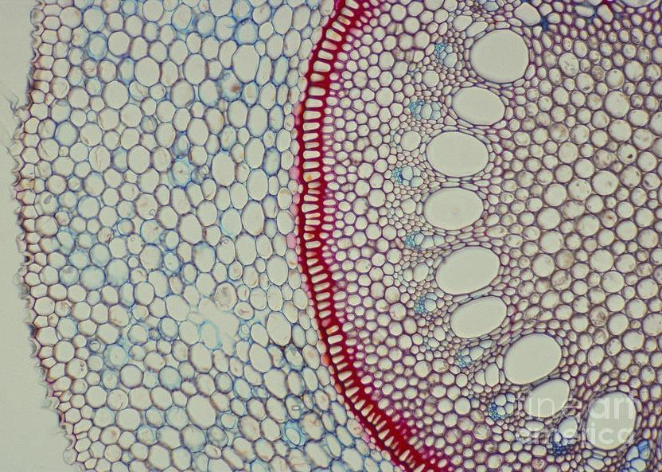
Struttura Primaria: Actinostele (Fasci Alterni) & Cilindro Centrale 🌾
🌾 La Radice: Struttura, Assorbimento & Simbiosi
- Rizoderma: Epidermide monostratificata dotata di peli radicali nella zona assorbente, priva di cuticola e stomi per facilitare il transito idrico.
- Corteccia Parenchimatica: Molto sviluppata, con ampi spazi intercellulari, specializzata nell'accumulo di amido di riserva.
- Cilindro Centrale (Actinostele): Delimitato dall'endoderma. I vasi xilematici e floematici sono disposti in cordoni longitudinali alternati chiamati arche xilematiche e floematiche . Nelle Dicotiledoni le arche sono poche (struttura diarchia, tetrarchia o pentarchia); nelle Monocotiledoni sono molto numerose (poliarchia). Sotto l'endoderma si trova il periciclo , uno strato cellulare attivo da cui traggono origine le radici laterali secondarie.
Filtrazione Selettiva: Via Apoplastica vs Simplastica 🔌
🌾 La Radice: Struttura, Assorbimento & Simbiosi
- Via Apoplastica: Le soluzioni fluiscono passivamente senza barriere chimiche attraverso lo spazio extracellulare continuo costituito dalle pareti cellulari e dagli spazi intercellulari idrofili.
- Via Simplastica: Le soluzioni entrano attivamente nel citosol attraverso la membrana plasmatica selettiva e si muovono da una cellula all'altra attraverso i ponti citoplasmatici dei plasmodesmi . 📸 Fig. da Dispensa pag. 56 - Vie di transito simplastica ed apoplastica nella corteccia All'endoderma radicale la via apoplastica viene interrotta dalla Banda di Caspary. Questo anello impermeabile costringe le soluzioni a passare per osmosi o canali ionici selettivi attraverso la membrana plasmatica cellulare, unendosi alla via simplastica, consentendo alla pianta di filtrare attivamente gli ioni e prevenire la perdita passiva di nutrienti.
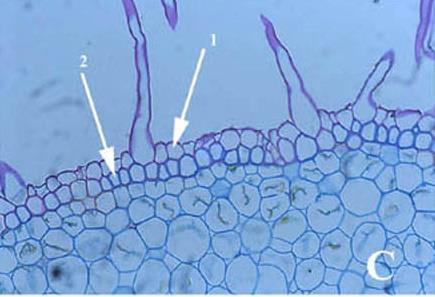
Anatomia Fogliare: Bifacciale (Dicotiledoni) vs Isofacciale (Monocotiledoni) 🍃
🍃 La Foglia: Mesofillo, Stomi & Adattamenti
- La foglia è l'organo fotosintetico per eccellenza, progettato per massimizzare l'intercettazione della luce e ottimizzare gli scambi gassosi riducendo la perdita d'acqua:
- Foglia Bifacciale (Dorsoventrale, tipica delle Dicotiledoni): Presenta una netta asimmetria tra le due pagine: Pagina Superiore: Esposta al sole. Rivestita da cuticola spessa. Sotto l'epidermide si trova il parenchima a palizzata , costituito da cellule cilindriche allungate strettamente addossate ricchissime di cloroplasti, deputate alla fotosintesi.
- parenchima lacunoso (spugnoso): Pagina Inferiore: Meno esposta. Presenta il , costituito da cellule arrotondate disposte in modo lasso che lasciano ampie lacune aerifere comunicanti con l'esterno attraverso gli stomi (localizzati prevalentemente o esclusivamente su questa pagina, foglie ipostomatiche), facilitando la diffusione di CO₂.
- Foglia Isofacciale (Monocentrica, tipica delle Monocotiledoni): Il mesofillo presenta una struttura omogenea, non differenziata in palizzata e lacunoso, oppure presenta il parenchima a palizzata su entrambi i lati del mesofillo. Gli stomi sono distribuiti equamente su entrambe le pagine (foglie anfistomatiche; es. graminacee). 📸 Fig. da Dispensa pag. 104 - Sezione trasversale di foglia isofacciale monocentrica con fasci conduttori paralleli
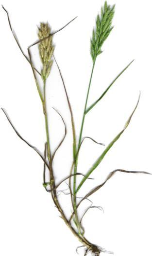
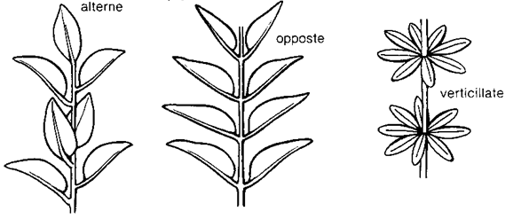
Fisiologia Stomatica: Regolazione del Turgore & Luce Blu 💧
🍃 La Foglia: Mesofillo, Stomi & Adattamenti
- Pareti cellulari asimmetriche: Le pareti interne delle cellule di guardia (rivolte verso la rima stomatica) sono molto spesse e rigide, mentre quelle esterne sono sottili ed elastiche. Le microfibrille di cellulosa sono orientate radialmente a cerchio (microfibrillazione radiale).
- Meccanismo di Apertura: Sotto stimolo di luce blu (percepita dai fotorecettori fototropine) o bassi livelli di CO₂, si attiva una pompa protonica H⁺-ATPasi sulla membrana delle cellule di guardia. Questa estrude protoni fuori dalla cellula generando un potenziale elettrico di membrana negativo. Il potenziale apre canali voltaggio-dipendenti che inducono un massiccio influsso di ioni potassio (K⁺) e cloruro (Cl⁻) dal citosol esterno. L'accumulo osmotico di questi ioni riduce il potenziale idrico interno richiamando acqua per osmosi attraverso le acquaporine. L'aumento del turgore gonfia le cellule di guardia; le pareti esterne elastiche si distendono curvandosi all'indietro e tirando con sé le rigide pareti interne, aprendo la rima stomatica.
- Meccanismo di Chiusura: Lo stress idrico provoca il rilascio dell'ormone vegetale acido abscissico (ABA) dalle radici e foglie. L'ABA blocca le H⁺-ATPasi e apre canali di efflusso per il calcio (Ca²⁺), stimolando l'uscita massiccia di K⁺ e Cl⁻. L'acqua esce per osmosi, le cellule perdono turgore flaccidendosi e chiudendo la rima.
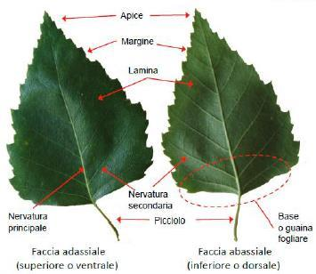
Adattamenti Fogliari: Foglie Xerofile, Idrofile & Carnivore 🌵
🍃 La Foglia: Mesofillo, Stomi & Adattamenti
- Foglie Xerofile (Ambienti Aridi): Progettate per prevenire la disidratazione. Cuticola cerosa spessa, epidermide pluristratificata, stomi infossati in cripte stomatiche protette da tricomi che intrappolano un microclima umido saturo d'acqua riducendo il gradiente di traspirazione. Mesofillo ricco di sclerenchima di sostegno che evita il collasso fisico della foglia avvizzita (es. oleandro, pino). 📸 Fig. da Dispensa pag. 104 - Sezione di foglia xerofila: cripte stomatiche protette da tricomi (oleandro)
- Foglie Idrofile (Ambienti Acquatici): Epidermide sottile priva di stomi se sommerse, o con stomi solo sulla pagina superiore se galleggianti (foglie epistomatiche; es. ninfea). Mesofillo occupato da un esteso aerenchima (parenchima aerifero) con enormi spazi gassosi intercellulari che favoriscono il galleggiamento e diffondono l'ossigeno alle radici sommerse in anossia.
- Foglie Modificate (Carnivore): Trasformate in trappole per la cattura e digestione enzimatica di insetti, sopperendo alla carenza cronica di Azoto e Fosforo nei suoli acidi torbosi (es. ascidi di Nepenthes, trappole a scatto di Dionaea).
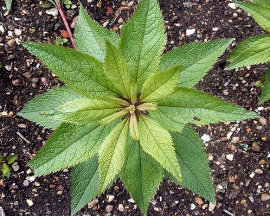
Le Micorrize: Ectomicorrize (Rete di Hartig) vs Endomicorrize 🍄
🍄 Simbiosi Radicali: Micorrize & Azotofissazione
- Le radici hanno evoluto straordinarie associazioni simbiotiche mutualistiche con funghi e batteri per superare i limiti nutrizionali del suolo:
- Ectomicorrize (tipiche di alberi forestali come Fagaceae, Pinaceae): Le ife fungine avvolgono l'apice radicale formando un fitto mantello esterno (manto fungino) che blocca lo sviluppo dei peli radicali. Le ife penetrano esclusivamente negli spazi intercellulari della corteccia radicale formando una fitta rete di scambio intercellulare chiamata rete di Hartig , senza mai penetrare all'interno delle cellule viventi (rimangono extracellulari). 📸 Fig. da Dispensa pag. 56 - Struttura ectomicorrizica: mantello fungino esterno e rete di Hartig intercellulare
- Endomicorrize VAM (Vescicolo-Arbuscolari, tipiche del 90% delle piante terrestri): Il fungo non forma alcun mantello esterno e penetra all'interno della radice. Le ife attraversano la parete cellulare delle cellule corticali ma non rompono mai il plasmalemma , il quale si invagina strettamente attorno ad esse. All'interno delle cellule formano strutture microscopiche ramificate ad albero chiamate arbuscoli (la sede principale di intenso scambio metabolico tra pianta e fungo) e vescicole di riserva lipidica intracellulari.
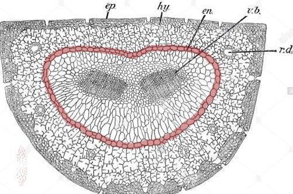
I Noduli Radicali & La Simbiosi con Rhizobium 🧬
🍄 Simbiosi Radicali: Micorrize & Azotofissazione
- Segnalazione chimica & Infezione: La radice rilascia nel suolo composti fenolici flavonoidi specifici. I batteri li percepiscono ed attivano i propri geni per la secrezione di molecole segnale note come fattori NOD . Questi inducono l'arricciamento del pelo radicale. I batteri penetrano la parete del pelo formando un canale tubulare di cellulosa chiamato filamento di infezione , che si allunga all'interno penetrando nelle cellule della corteccia radicale.
- Formazione del Nodulo: I fattori NOD stimolano le cellule corticali ed il periciclo a riprendere intense divisioni mitotiche, originando una neoformazione tumorale benigna visibile all'esterno: il nodulo radicale . I batteri, rilasciati all'interno delle cellule corticali del nodulo, vengono racchiusi in membrane di origine vegetale (simbiosomi) e si differenziano in bacterioidi , forme giganti incapaci di replicarsi ma altamente attive nella fissazione del N₂ atmosferico. 📸 Fig. da Dispensa pag. 56 - Struttura dei noduli radicali simbiotici e bacterioidi per azotofissazione
- La Nitrogenasi & La Leghemoglobina: La riduzione del N₂ gassoso in ammonio (NH₄⁺) è catalizzata dall'enzima batterico nitrogenasi . Questo enzima viene irreversibilmente inattivato anche da minime tracce di ossigeno libero (O₂). Per risolvere questo problema, la pianta e il batterio co-sintetizzano la leghemoglobina , una proteina affine all'ossigeno (dal caratteristico colore rosa-rosso all'interno del nodulo) che sequestra l'O₂ libero proteggendo la nitrogenasi, ma rilasciandolo selettivamente alla catena respiratoria batterica.
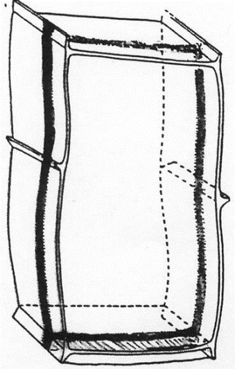
Il Ciclo Aplodiplonte: Sporofito e Gametofito 🔄
🔄 Alternanza di Generazioni & Cicli Ontogenetici
- I cicli vitali degli organismi vegetali si caratterizzano per la sequenza ordinata con cui si alternano la meiosi (fase nucleare aploide) e la gamia (fase nucleare diploide):
- Lo Sporofito (Generazione Diploide 2n): Si sviluppa per mitosi consecutive a partire dallo zigote diploide. A maturità, in organi specializzati chiamati sporangi, alcune cellule madri subiscono meiosi (meiosi intermedia o sporica) producendo spore aploidi (n) protette da una parete di sporopollenina.
- Il Gametofito (Generazione Aploide n): Si sviluppa per mitosi a partire da una spora aploide germinata. Sviluppa organi riproduttivi chiamati gametangia (anteridi maschili e archegoni femminili) all'interno dei quali produce gameti aploidi (n) per mitosi (non per meiosi!). La fusione dei gameti (gamia) ripristina la diploidia formando lo zigote, riavviando il ciclo.
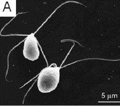
Briofite (Muschi): Il Gametofito Dominante 🪵
🔄 Alternanza di Generazioni & Cicli Ontogenetici
- gametofito aploide: La pianta verde, fogliosa e troficamente indipendente che costituisce il tappeto erboso dei muschi è il .
- richiede assolutamente la presenza di un velo d'acqua liquida: All'apice del gametofito si formano gli anteridi (producono gameti maschili biflagellati mobili) e gli archegoni a forma di fiasco (contenenti la cellula uovo). La fecondazione superficiale per permettere ai gameti maschili di nuotare fino all'archegonio.
- sporofito diploide (2n): Lo si sviluppa direttamente dentro l'archegonio fecondato. È una struttura transitoria e non fotosintetica, formata da un filamento (seta) sormontato da una capsula (urna sporangigena) contenente le spore. È troficamente parassita del gametofito, da cui dipende per l'approvvigionamento di acqua e nutrienti.
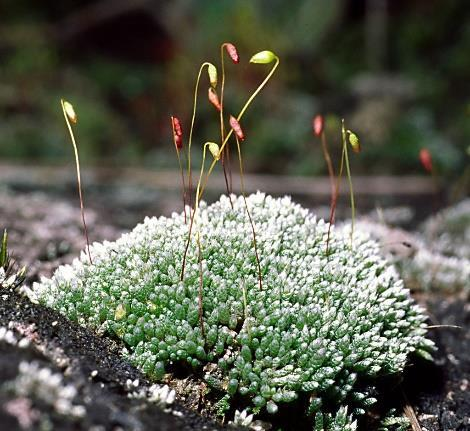
Pteridofite (Felci): Due Generazioni Indipendenti 🌿
🔄 Alternanza di Generazioni & Cicli Ontogenetici
- sporofito diploide (2n): La pianta macroscopica del sottobosco dotata di fronde, fusto (rizoma) e vere radici corrisponde allo , che è la generazione dominante.
- sori: Sulla pagina inferiore delle fronde si formano gruppi di sporangi chiamati . La meiosi produce spore aploidi che, rilasciate al suolo, germinano originando una generazione aploide indipendente: il protallo (gametofito n) .
- richiede acqua liquida: Il protallo è una lamina verde piccolissima a forma di cuore, autotrofica ma priva di tessuti vascolari. Porta sia anteridi che archegoni. Anche nelle felci, la fecondazione per permettere il transito dei gameti maschili cigliati mobili all'interno dell'archegonio. Lo zigote fecondato sviluppa lo sporofito che, inizialmente legato al protallo, lo digerisce rapidamente diventando indipendente.
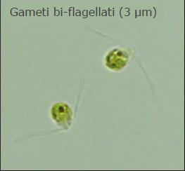
Il Trend Evolutivo: Riduzione Drastica del Gametofito 🌲
🔄 Alternanza di Generazioni & Cicli Ontogenetici
- Nel corso della colonizzazione della terraferma, le piante hanno evoluto una progressiva e drastica riduzione volumetrale e temporale del gametofito (n) a favore dello sporofito (2n): Questo trend protegge la fase riproduttiva sensibile (aploide, monogenica, prona a danni mutageni UV) confinandola e nutrendola all'interno dei tessuti diploidi dello sporofito. Nelle Spermatofite (piante con seme: Gimnosperme e Angiosperme), il gametofito femminile si riduce a poche cellule microscopiche contenute interamente nell'ovulo, mentre il gametofito maschile si riduce al granulo pollinico microscopico a 2-3 cellule spinto dal vento o dagli insetti, liberandosi completamente dal vincolo dell'acqua liquida per compiere la fecondazione. 📸 Fig. da Dispensa pag. 133 - Riduzione progressiva della generazione aploide (Gametofito) nelle Spermatofite 📸 Fig. da Dispensa pag. 133 - Quadro riassuntivo dei cicli vitali nelle piante terrestri
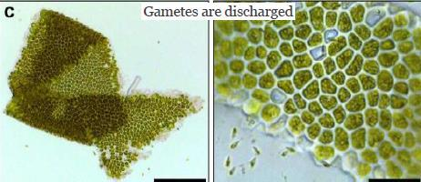
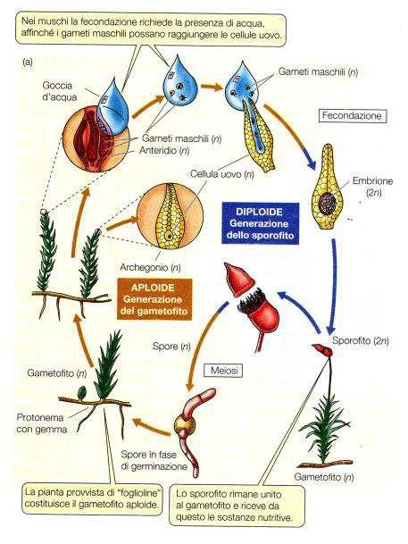
Granulo Pollinico: Il Gametofito Maschile Alato 🌲
🌲 Riproduzione delle Gimnosperme & Il Seme
- La comparsa del seme e del polline nelle Gimnosperme rappresenta una delle più importanti tappe evolutive della colonizzazione della terraferma:
- Si forma nei coni maschili (strobili gialli transitori costituiti da microsporofilli): All'interno delle sacche polliniche (microsporangi), le cellule madri diploidi compiono meiosi formando tetradi di microspore aploidi. Ciascuna microspora compie mitosi asimmetriche interne racchiusa in una parete protettiva spessa formata da esina (contenente sporopollenina) dotata di due espansioni cave ( sacche aerifere o ali ) che ne favoriscono la dispersione passiva per via eolica ( impollinazione anemofila ). Il granulo pollinico rilasciato è il gametofito maschile immaturo n , costituito da pochissime cellule: due cellule protallari degenerate, una cellula generativa (che produrrà i gameti) ed una cellula del tubetto.
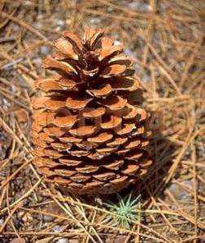
L'Ovulo & Il Gametofito Femminile (Endosperma Primario) 🥚
🌲 Riproduzione delle Gimnosperme & Il Seme
- micropilo: Un tegumento esterno diploide (2n) interrotto all'apice da un poro chiamato .
- nocella (2n): Il macrosporangio centrale diploide chiamato .
- Macrosporogenesi: Una cellula madre all'interno della nocella compie meiosi originando 4 macrospore lineari aploidi. Le tre vicine al micropilo degenerano; la macrospora calazale superstite germina compiendo numerose mitosi libere interne senza citochinesi, formando l' endosperma primario (gametofito femminile n) .
- cellula uovo (oosfera n): All'apice dell'endosperma primario (rivolto al micropilo) si differenziano due o tre archegoni rudimentali contenenti ciascuno una gigante .
Impollinazione & Fecondazione Sifonogama 💧
🌲 Riproduzione delle Gimnosperme & Il Seme
- Il polline trasportato dal vento atterra sul micropilo dell'ovulo, attratto da una goccia viscosa secreta dalla pianta (goccia di impollinazione). Con il riassorbimento della goccia, il polline penetra nella nocella. Il granulo pollinico germina: la cellula del tubetto si allunga digerendo enzimaticamente i tessuti della nocella, formando il tubetto pollinico . Nel frattempo, la cellula generativa si divide mitoticamente producendo una cellula sterile ed una cellula spermatogena che si scinde in due gameti maschili (nuclei spermatici n) privi di flagelli . Il tubetto pollinico penetra nell'archegonio e vi scarica i nuclei spermatici (fecondazione sifonogama). Uno si fonde con la cellula uovo formando lo zigote (2n) ; l'altro degenera. Nelle gimnosperme l'intero processo è lentissimo (tra impollinazione e fecondazione può trascorrere oltre un anno). 📸 Fig. da Dispensa pag. 135 - Germinazione del granulo pollinico e crescita del tubetto pollinico nella nocella 📸 Fig. da Dispensa pag. 135 - Fusione del nucleo spermatico con l'oosfera (fecondazione sifonogama)
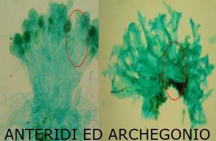
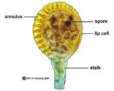
Struttura Anatomica del Seme di Gimnosperma 🌲
🌲 Riproduzione delle Gimnosperme & Il Seme
- Tegumento Seminario (2n, diploide): Strato legnoso o cartaceo esterno protettivo, derivato dai tegumenti dell'ovulo appartenenti allo sporofito madre originario .
- Endosperma Primario (n, aploide): Tessuto parenchimatico di riserva ad alto contenuto lipidico e proteico, che circonda l'embrione. Costituisce il corpo stesso del gametofito femminile .
- L'Embrione (2n, diploide): Il nuovo sporofito figlio derivato dallo zigote. A maturità presenta una radichetta (ipocotile), una piumetta apicale (epicotile) ed una corona di numerosi cotiledoni (foglie embrionali) fotosintetici pronti a germinare. 📸 Fig. da Dispensa pag. 143 - Seme di Gimnosperma: tre generazioni sovrapposte nello stesso organo
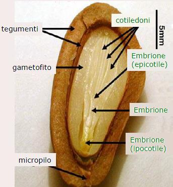
Morfologia del Fiore: I Quattro Verticilli 🌸
🌸 Struttura del Fiore, Micro e Macrosporogenesi
- Il fiore delle Angiosperme è una struttura riproduttiva altamente specializzata, evolutasi in stretta co-evoluzione con gli insetti impollinatori:
- Il Calice (esterno): Costituito da sepali verdi, con funzione di protezione del bocciolo fiorale chiuso.
- La Corolla: Costituita da petali colorati ed odorosi dotati di funzione vessillare (attrazione visiva degli impollinatori). Calice + Corolla = Perianzio . Nel caso in cui sepali e petali siano identici (es. tulipano), sono chiamati tepali ed il complesso è detto perigonio .
- L'Androceo (verticillo maschile): Costituito dagli stami . Ogni stame presenta un sottile filamento terminante in un' antera bilobata. Ciascun lobo contiene due sacche polliniche (microsporangi).
- Il Gineceo (pistillo, verticillo femminile interno): Costituito da uno o più carpelli fusi che racchiudono l'ovulo (angiospermia = seme protetto). Si suddivide in: stimma apicale (superficie papillosa e viscosa per la cattura del polline), stilo (canale di transito) ed ovario basale cavo contenente gli ovuli.
Microsporogenesi & Microgametogenesi (Il Polline) 🌾
🌸 Struttura del Fiore, Micro e Macrosporogenesi
- Microsporogenesi: Le cellule madri diploidi compiono meiosi producendo tetradi di microspore aploidi. Le cellule del tappeto (lo strato nutrizionale più interno dell'antera) secernono enzimi callasi per dissolvere la parete di callosio liberando le microspore singole.
- Microgametogenesi: Ciascuna microspora compie una mitosi asimmetrica producendo due cellule di dimensioni diverse all'interno della stessa parete pollinica: una grande cellula vegetativa (deputata a produrre il tubetto pollinico) ed una piccola cellula generativa (racchiusa nel citoplasma della vegetativa, deputata a produrre i gameti). La parete esterna del granulo pollinico è l' esina , un guscio resistentissimo intagliato con motivi specie-specifici costituito da sporopollenina (un polimero lipidico impermeabile insolubile); la parete interna sottile è l' intina cellulosica.
Macrosporogenesi & Macrogametogenesi (Il Sacco Embrionale) 🥚
🌸 Struttura del Fiore, Micro e Macrosporogenesi
- Macrosporogenesi: Una cellula madre diploide situata nella nocella (macrosporangio) compie meiosi producendo 4 macrospore aploidi disposte in fila lineare. Le tre macrospore dirette verso il micropilo degenerano; la macrospora superstite diretta verso il polo calazale sopravvive.
- Macrogametogenesi (Modello Polygonum): La macrospora calazale superstite si ingrandisce e compie 3 mitosi consecutive libere (cariocinesi senza citocinesi) , producendo una singola cellula gigante a 8 nuclei aploidi. Successivamente avviene la migrazione nucleare e la citocinesi asimmetrica, delimitando il sacco embrionale maturo (gametofito femminile n) a 7 cellule ed 8 nuclei : Polo Micropilare (ingresso): Costituito dall'apparato dell' oosfera (cellula uovo n) , affiancata da due cellule sinergidi (secernono proteine segnale LURE per guidare il tubetto pollinico).
- antipodiali: Polo Calazale: Tre cellule (funzione di supporto nutrizionale precoce).
- due nuclei polari: Regione Centrale: Una singola cellula gigante contenente i liberi nel citosol comune.
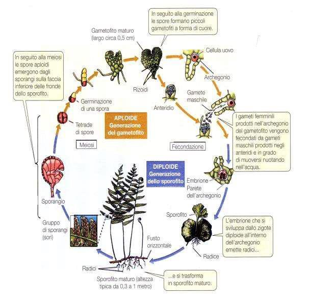
Impollinazione & Allungamento Guidato del Tubetto Pollinico 🌸
🍳 Doppia Fecondazione, Seme & Sviluppo Embrionale
- La doppia fecondazione è un processo evolutivo unico ed esclusivo delle Angiosperme, che ottimizza le risorse energetiche sintetizzando i tessuti di riserva solo ad avvenuta fecondazione dello zigote:
- Il granulo pollinico atterra sullo stimma ricettivo. Si idrata e la cellula vegetativa estrude l'intina attraverso un poro dell'esina originando il tubetto pollinico . Il tubetto si allunga penetrando nei tessuti dello stilo, nutrendosi a spese delle sostanze dello stilo stesso. Durante questo tragitto, la cellula generativa compie una mitosi producendo due gameti maschili (nuclei spermatici n) privi di flagelli . Il tubetto viene guidato all'interno dell'ovario da gradienti di ioni calcio (Ca²⁺) e segnali chemiotattici peptidici secreti attivamente dalle cellule sinergidi dell'ovulo. Penetra attraverso il micropilo, rompe la parete di una sinergide e vi scarica i due nuclei spermatici nel sacco embrionale.
La Doppia Fecondazione delle Angiosperme 🍳
🍳 Doppia Fecondazione, Seme & Sviluppo Embrionale
- Prima Fecondazione: Un nucleo spermatico (n) penetra nella cellula uovo (oosfera n) e si fonde con il suo nucleo originando lo zigote diploide (2n) , che darà origine all'embrione (il nuovo sporofito).
- Seconda Fecondazione: Il secondo nucleo spermatico (n) migra al centro del sacco embrionale e si fonde contemporaneamente con i due nuclei polari (n+n) della grande cellula centrale. La fusione di questi tre nuclei aploidi origina un nucleo triploide (3n), la cui cellula compirà rapide mitosi originando l' endosperma secondario (3n, triploide) . Questo tessuto è estremamente ricco di amido, proteine e lipidi di riserva per lo sviluppo embrionale.
Struttura del Seme: Monocotiledoni vs Dicotiledoni 🥜
🍳 Doppia Fecondazione, Seme & Sviluppo Embrionale
- Seme delle Monocotiledoni: Possiede un solo cotiledone ridotto e scudiforme chiamato scutello . L'endosperma secondario triploide (3n) rimane abbondante e separato a maturità occupando gran parte del seme (semi albuminosi o endospermati; es. cereali come il mais). Lo scutello funge da organo assorbente idrolizzando le riserve dell'endosperma e trasferendole all'embrione durante la germinazione. 📸 Fig. da Dispensa pag. 143 - Anatomia comparata del seme: albuminoso (mais) vs esalbuminoso (fagiolo)
- Seme delle Dicotiledoni: Possiede due cotiledoni giganti . Durante la maturazione del seme, l'embrione assorbe completamente e digerisce l'endosperma secondario triploide, stoccando le proteine, i lipidi e l'amido direttamente all'interno dei due cotiledoni carnosi (semi esalbuminosi o cotiledonari; es. fagiolo, arachide). A maturità i cotiledoni occupano l'intero volume interno del seme. 📸 Fig. da Dispensa pag. 143 - Meccanica di germinazione: epigea (sollevamento dei cotiledoni) ed ipogea
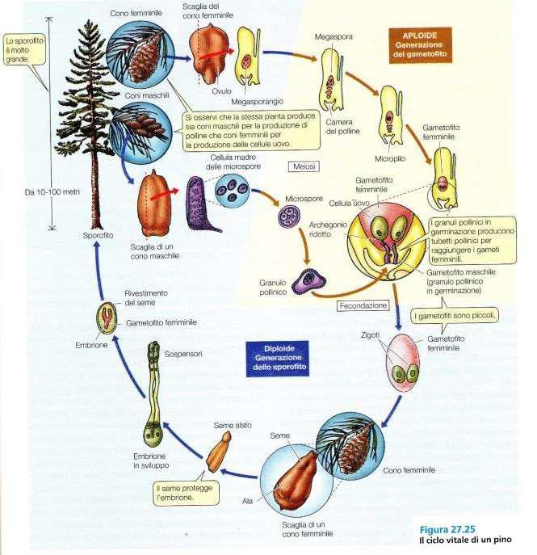
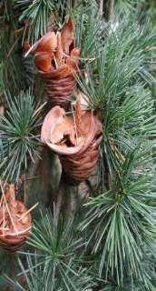
Anatomia del Frutto & Il Pericarpo 🍑
🍒 Il Frutto: Tipologie, Anatomia & Dispersione
- Il frutto (esclusivo delle Angiosperme) deriva dallo sviluppo della parete dell'ovario indotto da stimoli ormonali post-fecondazione, proteggendo il seme e assistendone la dispersione:
- Esocarpo: La buccia esterna protettiva, derivata dall'epidermide esterna dell'ovario. Può essere cutinizzata, cerosa, provvista di peli o colorata da pigmenti (antociani, carotenoidi).
- Mesocarpo: Lo strato intermedio parenchima-ricco. Nei frutti carnosi diventa estremamente spesso, idratato e ricco di zuccheri solubili (polpa); nei frutti secchi rimane sottile, fibroso o cartaceo.
- Endocarpo: Lo strato più interno che delimita la cavità in cui sono alloggiati i semi, derivato dall'epidermide interna del carpello. Nei frutti a drupa lignifica pesantemente formando un guscio duro a protezione del seme (il nocciolo).
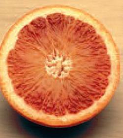
Classificazione dei Frutti Secchi: Deiscenti vs Indeiscenti 🥜
🍒 Il Frutto: Tipologie, Anatomia & Dispersione
- Frutti Secchi Deiscenti: Si aprono spontaneamente a maturità lungo linee di rottura predeterminate: Legume (o baccello, tipico delle Fabaceae): Deriva da un ovario monocarpellare. Si apre a maturità lungo due suture longitudinali opposte (es. fagiolo, pisello).
- replo: Siliqua (tipico delle Brassicaceae): Deriva da un ovario bicarpellare sincarpico. Si apre dal basso verso l'alto lungo due valve lasciando al centro un tramezzo membranoso persistente chiamato su cui sono inseriti i semi (es. senape, colza).
- Fig. da Dispensa pag. 163: Capsula: Deriva da ovario pluricarpellare sincarpico. La deiscenza può avvenire per pori (capsula poricida del papavero), fessure longitudinali (capsula setticida o loculicida) o per distacco di un coperchio superiore (pisside). 📸 - Strutture e classificazione di frutti secchi deiscenti (siliqua e baccello)
- Frutti Secchi Indeiscenti: Non si aprono spontaneamente a maturità; l'intero frutto viene disperso contenendo il seme all'interno: Achenio: Monoseminato, con pericarpo coriaceo non saldato al tegumento del seme interno (il seme rimane libero all'interno della cavità; es. girasole, tarassaco).
- completamente saldato e fuso: Cariosside (tipico delle Poaceae): Monoseminato. Il pericarpo sottile è al tegumento del seme interno, formando un'unica unità inscindibile (il chicco di grano, mais, riso).
- Noce: Pluricarpellare monoseminato per aborto degli altri ovuli, caratterizzato da un pericarpo interamente legnoso, durissimo e spesso (es. nocciola, ghianda).
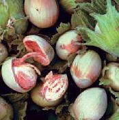
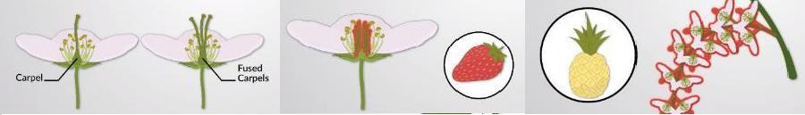
Frutti Carnosi, Falsi Frutti & Infruttescenze 🍇
🍒 Il Frutto: Tipologie, Anatomia & Dispersione
- Bacca: Interamente carnosa. Il pericarpo presenta un esocarpo sottile e flessibile, ed un mesocarpo ed endocarpo carnosi gelatinosi in cui i semi sono direttamente immersi nella polpa (es. pomodoro, uva, mirtillo).
- Drupa: Presenta un esocarpo sottile, un mesocarpo carnoso e succulento (polpa) ed un endocarpo legnoso duro (nocciolo) che racchiude strettamente il seme proteggendolo dai succhi gastrici dell'animale (es. pesca, oliva, ciliegia, prugna). 📸 Fig. da Dispensa pag. 163 - Morfologia interna di bacca (pomodoro) e drupa (pesca)
- Falsi Frutti: Strutture derivate dallo sviluppo dell'ovario insieme ad altre porzioni fiorali non carpellari (es. il ricettacolo): Pomo (mela, pera): Il vero frutto è il torsolo interno (composto dai carpelli coriacei); la parte commestibile esterna carnosa deriva dallo sviluppo del ricettacolo fiorale che circonda l'ovario.
- Cinorrodo (frutto della rosa): Ricettacolo a coppa carnoso e concavo che racchiude al suo interno numerosi veri frutti secchi acheni.
- Fig. da Dispensa pag. 163: Fragola: È un falso frutto collettivo. La polpa rossa e dolce deriva dal ricettacolo ingrossato; i veri frutti sono i minuscoli acheni gialli distribuiti sulla superficie. 📸 - Anatomia di pomo, fragola, sicono del fico e sorosio dell'ananas
- Infruttescenze: Derivano dallo sviluppo coordinato dei singoli ovari di un'intera infiorescenza fusa insieme: Sicono (fico): Ricettacolo cavo carnoso a forma di fiasco provvisto di un poro apicale, tappezzato internamente da centinaia di minuscoli fiori che si trasformano in veri frutti acheni.
- Sorosio (mora di gelso, ananas): Fusione dei singoli frutti carnosi derivati da fiori addossati lungo un asse centrale comune.
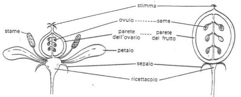
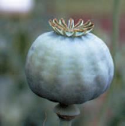
Strategie di Dispersione dei Semi & Co-Evoluzione 🦁
🍒 Il Frutto: Tipologie, Anatomia & Dispersione
- Zoocoria (Dispersione tramite animali): Endozoocoria: Gli animali mangiano frutti carnosi appetitosi e colorati. I semi, protetti da endocarpi legnosi o tegumenti resistenti, attraversano intatti l'apparato digerente e vengono espulsi con le feci in un terreno concimato lontano (es. drupe, bacche).
- Epizoocoria: Frutti o semi provvisti di uncini o peli appiccicosi che si agganciano passivamente al pelo dei mammiferi o alle piume degli uccelli al loro passaggio (es. Arctium lappa , lappola).
- Anemocoria (Dispersione tramite vento): Frutti o semi leggeri dotati di espansioni aerodinamiche: ali membranose (samara dell'acero) o ciuffi di peli sericei (pappo del tarassaco o cotone).
- Idrocoria (Dispersione tramite acqua): Tipica di piante litoranee. I semi o frutti presentano tessuti spugnosi ricchi d'aria (aerenchima) o intercapedini che garantiscono il galleggiamento prolungato in acqua marina senza danni all'embrione (es. noce di cocco, frutto galleggiante di Posidonia oceanica ).
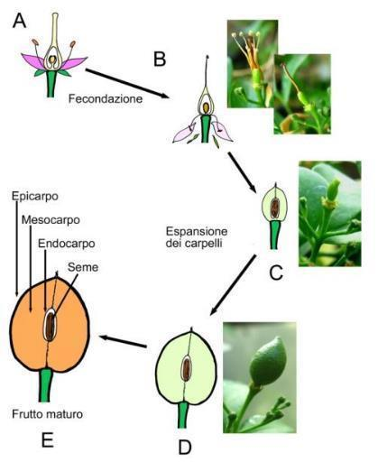
Compartimentazione del Cloroplasto & Tilacoidi 🍃
⚡ Fotosintesi, Cloroplasti & Enzima Rubisco
- La fotosintesi trasforma l'energia luminosa in energia chimica. Questo processo avviene nei cloroplasti e coinvolge una complessa cooperazione nucleo-plastidiale:
- Membrana Esterna: Liscia e altamente permeabile a metaboliti, zuccheri e piccole proteine grazie alla presenza di porine asimmetriche.
- Membrana Interna: Altamente selettiva e priva di porine. Regola finemente il flusso di ioni (es. magnesio, calcio) e metaboliti tramite trasportatori specifici e proteine carrier.
- I Tilacoidi: Ripiegamenti della membrana interna che si sviluppano nello stroma racchiudendo uno spazio acquoso detto lumen . Possono essere singoli (tilacoidi stromatici) o impilati in dischi appiattiti detti grana (granum) . Le membrane tilacoidali ospitano i fotosistemi in cui la clorofilla A e B capta i fotoni solari, convertendo l'energia luminosa in energia chimica sotto forma di ATP e NADPH (Fase Luminosa) con rilascio di ossigeno molecolare ($O_2$) dovuto alla fotolisi dell'acqua. 📸 Fig. da Dispensa pag. 23 - Particolare submicroscopico di tilacoidi granali e stromatici
- Lo Stroma: Matrice gelatinosa idrofila che circonda i tilacoidi. Contiene il DNA plastidiale circolare nudo , ribosomi 70S di tipo batterico, precursori metabolici ed enzimi solubili della fase oscura ( Ciclo di Calvin ), responsabili dell'utilizzo di ATP e NADPH per ridurre il biossido di carbonio ($CO_2$) in glucosio.
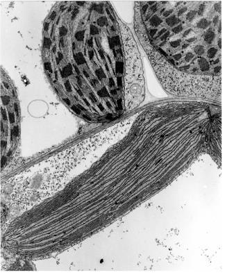
Accumulo di Amido Primario vs Secondario 🥖
⚡ Fotosintesi, Cloroplasti & Enzima Rubisco
- Amido Primario: Durante le ore diurne, la fotosintesi produce glucosio ad altissima velocità. Per evitare che l'eccessiva concentrazione di zuccheri solubili citosolici alteri l'equilibrio osmotico del cloroplasto (inducendo un ingresso incontrollato di acqua), il glucosio viene immediatamente polimerizzato ed accumulato all'interno dello stroma sotto forma di amido primario (osmoticamente inattivo, insolubile).
- Traslocazione Notturna: Di notte, in assenza di luce, l'amido primario viene idrolizzato da enzimi amilasi e fosforilasi in maltosio e glucosio, convertito poi in saccarosio ed esportato attraverso la via floematica verso gli organi non fotosintetici della pianta ("sink", come radici, tuberi e semi).
- Amido Secondario: Negli organi di accumulo, il saccarosio viene scisso e ri-polimerizzato all'interno dei plastidi specializzati ( amiloplasti ) sotto forma di amido secondario di riserva a strati concentrici attorno a un punto di nucleazione detto ilo .
L'Enzima Rubisco & Teoria Endosimbiontica 🧬
⚡ Fotosintesi, Cloroplasti & Enzima Rubisco
- 8 Subunità Grandi (L, Large - ~55 kDa): Contengono il sito attivo catalitico. Sono codificate direttamente dal DNA plastidiale e tradotte sui ribosomi 70S del cloroplasto.
- 8 Subunità Piccole (S, Small - ~13 kDa): Svolgono un ruolo di regolazione strutturale. Sono codificate dal DNA nucleare , tradotte nel citoplasma sui ribosomi 80S e importate nello stroma attraverso i canali di trasporto della membrana del cloroplasto (complessi TOC/TIC).
Inefficienza Cinetica e Doppia Attività dell'Enzima ⚖️
⚡ Fotosintesi, Cloroplasti & Enzima Rubisco
- Lentezza Catalitica: Ogni molecola di Rubisco fissa solo 3-10 molecole di $CO_2$ al secondo. Per compensare questa lentezza esasperante, le piante sintetizzano quantità gigantesche di questo enzima per rendere la fotosintesi efficiente.
- Attività Bifunzionale: Il sito attivo dell'enzima non è specifico al 100% per la $CO_2$, ma mostra affinità anche per l'ossigeno molecolare ($O_2$): Carbossilazione: Rubisco + $CO_2$ + Ribulosio-1,5-bifosfato -> 2 molecole di 3-fosfoglicerato (fisiologica fotosintesi C3).
- 2-fosfoglicolato: Ossigenazione: Rubisco + $O_2$ + Ribulosio-1,5-bifosfato -> 1 molecola di 3-fosfoglicerato + 1 molecola di (avvia la fotorespirazione deleteria).
Il Ciclo della Fotorespirazione (Recupero del Carbonio) ⚙️
🌵 Adattamenti Fisiologici: Piante C3, C4 & CAM
- Le piante hanno sviluppato straordinarie varianti metaboliche ed anatomiche per superare i limiti cinetici della Rubisco e colonizzare ambienti aridi:
- Cloroplasto: Il fosfoglicolato viene defosforilato in glicolato ed esportato nei perossisomi.
- Perossisoma: Il glicolato viene ossidato a gliossilato (generando perossido di idrogeno $H_2O_2$, rimosso dalla catalasi) e poi transaminato in glicina , la quale viene esportata nei mitocondri.
- Mitocondrio: Due molecole di glicina vengono decarbossilate e deaminate per formare una molecola di serina , rilasciando una molecola di $CO_2$ ed un atomo di ammonio ($NH_4^+$).
- Perossisoma: La serina viene riconvertita in idrossipiruvato e ridotta a glicerato .
- Cloroplasto: Il glicerato rientra nel cloroplasto dove viene fosforilato in 3-fosfoglicerato spendendo ATP, per poter finalmente rientrare nel Ciclo di Calvin.
Fotosintesi C4: Separazione Spaziale & Anatomia Kranz 🌽
🌵 Adattamenti Fisiologici: Piante C3, C4 & CAM
- Cellule del Mesofillo: Localizzate esternamente. Possiedono cloroplasti con tilacoidi normali e grana sviluppati. Qui non c'è Rubisco. La $CO_2$ atmosferica viene idratata in bicarbonato e fissata dall'enzima PEP-carbossilasi (fosfoenolpiruvato carbossilasi) che non ha affinità per l'$O_2$. La PEP-carbossilasi fissa il carbonio in un composto a 4 atomi di carbonio: l' ossalacetato , poi convertito in malato .
- Cellule della Guaina del Fascio: Formano un anello interno impermeabile ai gas attorno ai fasci conduttori. Possiedono cloroplasti modificati: **tilacoidi allungati privi di grana (agrani)**, molto stroma e ricchi di Rubisco. Il malato diffonde dal mesofillo alla guaina attraverso fitti plasmodesmi , dove viene decarbossilato liberando un'enorme concentrazione locale di $CO_2$ direttamente attorno alla Rubisco.
Fotosintesi CAM: Separazione Temporale per Climi Desertici 🌵
🌵 Adattamenti Fisiologici: Piante C3, C4 & CAM
- Fase Notturna (Stomi Aperti): Le temperature fresche riducono la traspirazione. Gli stomi si aprono e la pianta assorbe massicciamente $CO_2$. La PEP-carbossilasi nel citoplasma fissa la $CO_2$ sul fosfoenolpiruvato formando ossalacetato, convertito in acido malico . L'acido malico viene pompato attivamente e accumulato nel grande **vacuolo**, provocando una marcata acidificazione del succo vacuolare durante la notte (pH scende a 3).
- Fase Diurna (Stomi Chiusi): Gli stomi rimangono sigillati per prevenire qualsiasi perdita d'acqua per traspirazione. L'acido malico accumulato esce dal vacuolo e viene decarbossilato nel citosol, rilasciando una grande quantità di $CO_2$ gassosa internamente. Questa $CO_2$ diffonde nei cloroplasti dove viene fissata dalla Rubisco e dal Ciclo di Calvin, sfruttando l'ATP e NADPH prodotti in tempo reale dalla fase luminosa diurna.
La Dominanza Apicale & Auxina 👑
🧪 Fitormoni & Architettura della Ramificazione
- Lo sviluppo morfologico e la crescita dei rami sono regolati finemente dall'equilibrio dei fitormoni prodotti dagli apici meristematici:
- La dominanza apicale è il fenomeno per cui la gemma apicale del fusto principale controlla e inibisce lo sviluppo delle gemme laterali sottostanti, costringendo la pianta a crescere prevalentemente in altezza. Meccanismo Ormonale: La gemma apicale produce continuamente l'ormone auxina (acido indolo-3-acetico, IAA). L'auxina si sposta lungo il fusto tramite trasporto polare basipeto (pompe di efflusso PIN localizzate sulla base della membrana cellulare). Il flusso di auxina inibisce le gemme laterali. Se si asporta la gemma apicale (cimatura o potatura), il flusso di auxina si interrompe bruscamente e le citochine risalenti dalle radici stimolano le gemme laterali a germogliare, ripristinando la crescita arbustiva.
Ramificazione Monopodiale vs Simpodiale 🌳
🧪 Fitormoni & Architettura della Ramificazione
- Ramificazione Monopodiale (tipica delle Conifere): La gemma apicale mantiene la dominanza per tutta la vita della pianta. L'asse principale si allunga continuamente, mentre i rami laterali sono sempre subordinati e più corti. La chioma che ne deriva ha una tipica forma conica piramidale (es. Abete, Pino).
- Ramificazione Simpodiale (tipica delle Dicotiledoni arboree): La gemma apicale cessa spontaneamente di funzionare o degenera al termine della stagione di crescita, abolendo la dominanza. Lo sviluppo prosegue ad opera delle gemme laterali sottostanti. La chioma assume una forma globulare o espansa (es. Quercia, Tiglio, Ciliegio). Si divide in: Dicasio (o biforcata): La gemma apicale degenera e si sviluppano simmetricamente due gemme laterali adiacenti, originando due rami divergenti a "Y" ad ogni ciclo vegetativo.
- Monocasio: La gemma apicale degenera, ma **una sola gemma laterale** assume la dominanza accrescendosi vigorosamente nella stessa direzione dell'asse principale, simulando un fusto continuo (falso asse o simpodio).
Macroblasti, Brachiblasti & Polloni 🎋
🧪 Fitormoni & Architettura della Ramificazione
- Macroblasti (o Normoblasti): Rami lunghi di accrescimento. L'apice meristematico mantiene a lungo la capacità mitotica, gli internodi sono lunghi ed allungati. Svolgono la funzione di espansione spaziale della chioma e portano prevalentemente foglie (nelle Rosaceae da frutto).
- Brachiblasti: Rami cortissimi ad accrescimento definito. Gli internodi sono estremamente ravvicinati (pochi millimetri) e l'apice arresta lo sviluppo precocemente. Portano i fiori e i frutti (es. Rosaceae, Ginkgo). Riconoscerli è fondamentale per una corretta potatura di fruttificazione.
- Polloni: Rami eccezionalmente vigorosi, lunghi e dritti che si sviluppano a partire da gemme avventizie sulle radici o alla base del colletto del fusto. Spesso la loro formazione massiccia è indotta da ferite, potature severe o senescenza della pianta madre che allentano il controllo della dominanza apicale.
🍂 Fisiologia dell'Abscissione & Movimenti Stomatici
- I processi fisiologici attivi di risposta ambientale che consentono la caduta stagionale degli organi e la regolazione della perdita idrica:
- La Zona di Abscissione: Si forma alla base del picciolo. È costituita da cellule piccole con pareti primarie sottili e ricche di pectine. 📸 Fig. da Dispensa pag. 109 - Particolare al microscopio dello strato di separazione picciolare
- Regolazione Ormonale: Quando la foglia invecchia (senescenza), la sua produzione di auxina diminuisce drasticamente, mentre aumenta la sintesi dell'ormone gassoso etilene . Il calo di auxina rende la zona di abscissione estremamente sensibile all'etilene.
- Idrolisi Enzimatica: L'etilene stimola le cellule della zona di abscissione a sintetizzare e secernere enzimi idrolitici, tra cui **cellulasi e pectinasi**. Questi enzimi digeriscono la lamella mediana pectinica e le pareti primarie cellulari, indebolendo la giunzione meccanica. 📸 Fig. da Dispensa pag. 109 - Idrolisi enzimatica pectinica e lisi meccanica controllata delle cellule
- Strato Protettivo di Sughero: Contemporaneamente, le cellule poste sul lato del fusto accumulano suberina e lignina (suberificazione) formando uno strato impermeabile protettivo. Al distacco della foglia, questo strato sigilla immediatamente la ferita (cicatrice fogliare), prevenendo perdite di linfa e l'ingresso di spore fungine o batteri.
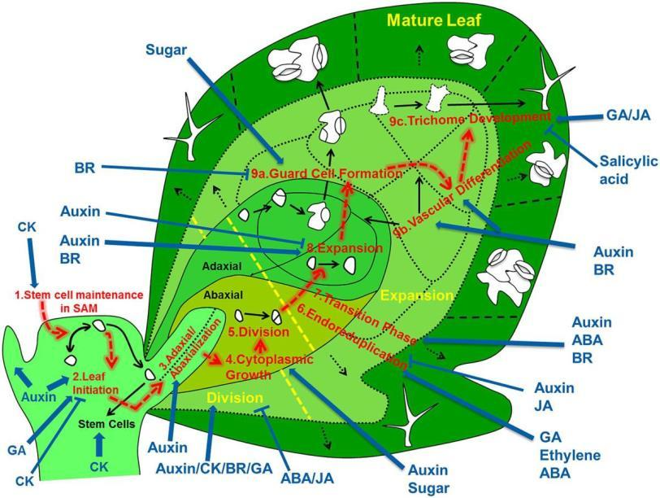
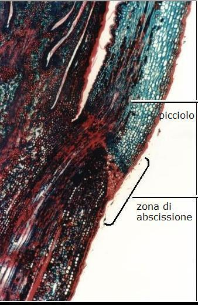
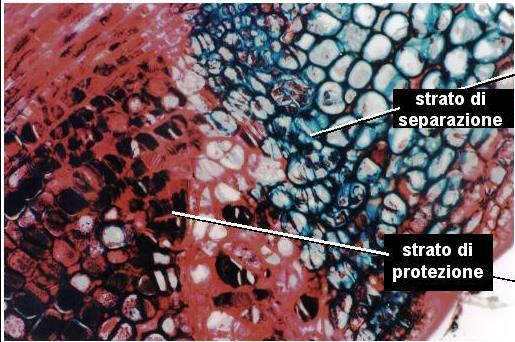
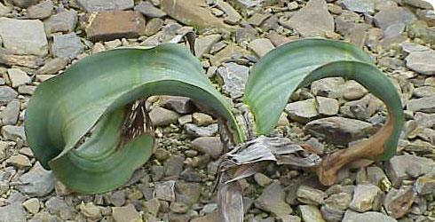
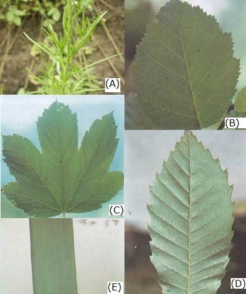